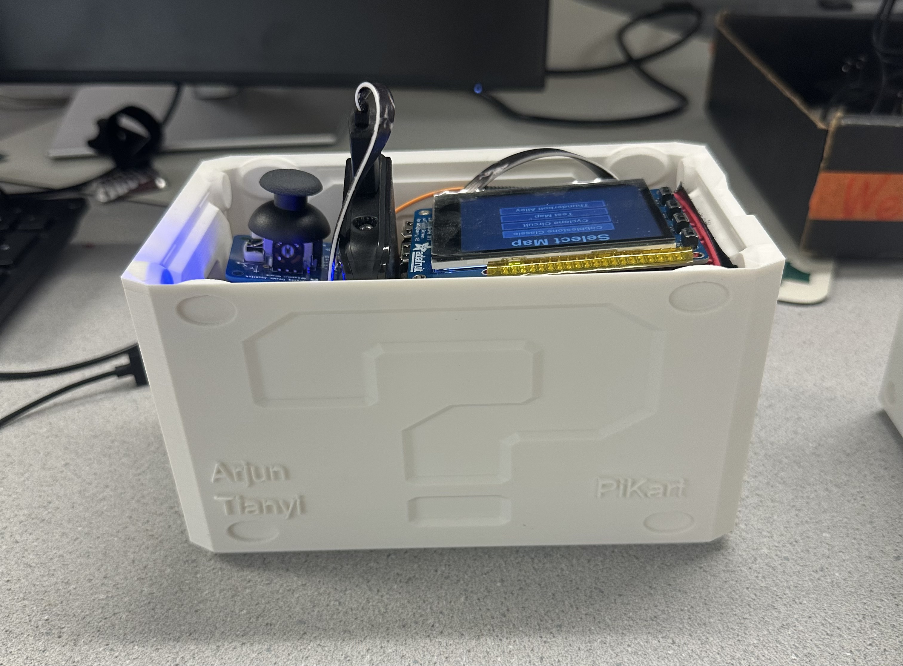
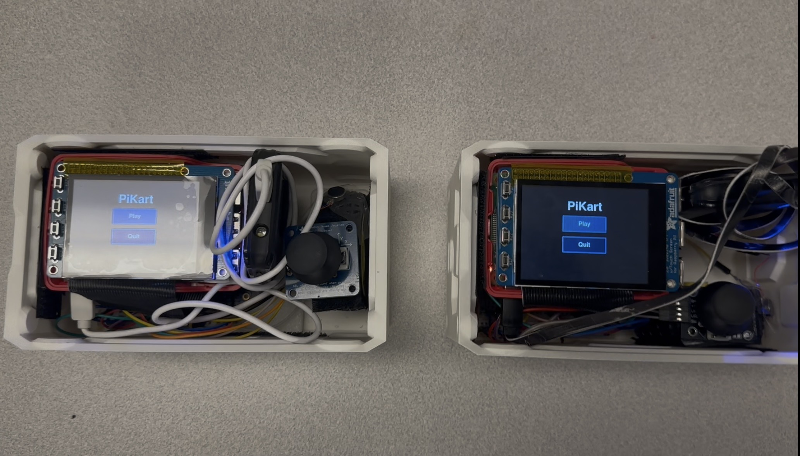
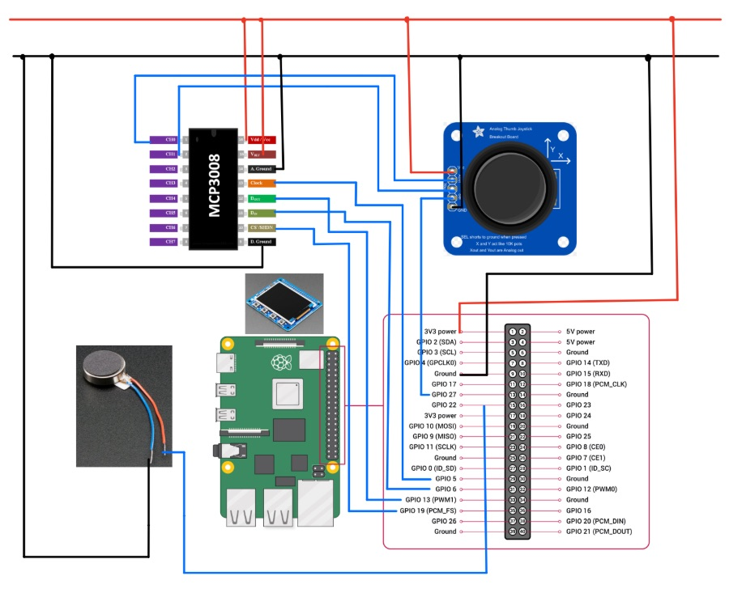
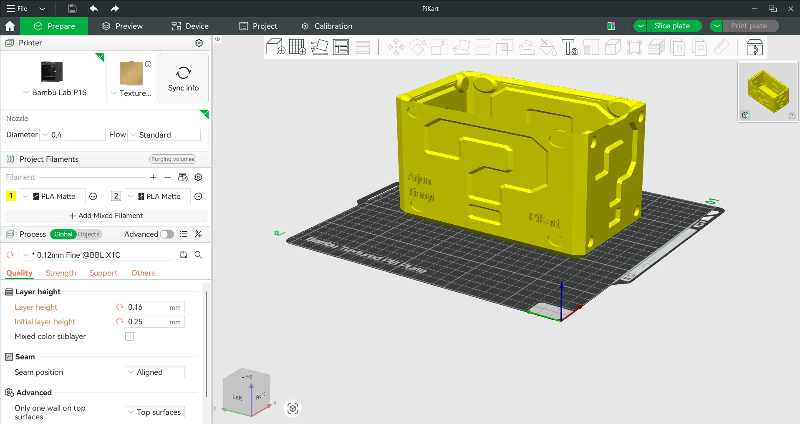
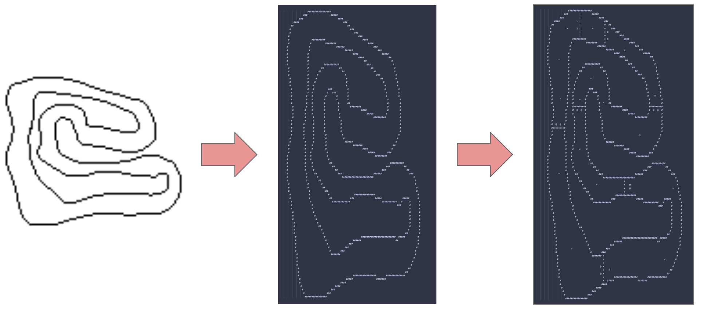
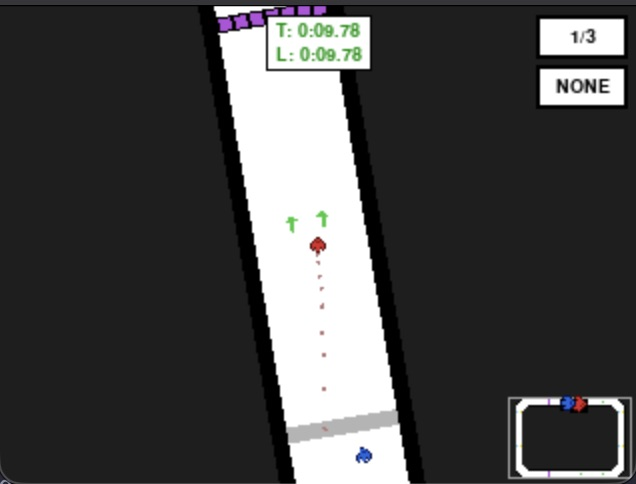

2-Player Networked Racing Game
Arjun Saini (ars437) · Tianyi Liu (tl955)
ECE 5725 · May 2025
PiKart is a 2-player racing game inspired by Mario Kart, built in Python using Pygame and designed to run on two Raspberry Pi 4 devices. We were motivated to build a project with a significant software component that also meaningfully interacted with hardware, and that could take advantage of features specific to the Raspberry Pi such as WiFi networking and GPIO. The goal was a fully functional game where each player has their own handheld device and the two units communicate over a network connection.


Our goal was to build a polished, fully playable 2-player racing game running across two Raspberry Pi 4 devices communicating over a local WiFi network, with each player using a custom handheld controller featuring an analog joystick and haptic vibration feedback. The game needed to sustain 60 FPS physics and rendering on the host Pi while maintaining sufficiently low network latency for responsive gameplay, and to support a complete game loop including menus, map selection, and racing. We additionally aimed to include Mario Kart gameplay elements such as powerups, speed tiles, and shell projectiles to go beyond a basic racing game.
Development proceeded through three major milestones. The first was a functional single-player racing game running in debug mode on a laptop, with keyboard controls, collision, lap counting, and the full menu flow. The second milestone was a 2-player game running as a single split-screen application on the same laptop, with both players sharing the same physics simulation and controlled via keyboard. This milestone validated the overall game loop, rendering pipeline, and all gameplay features before any networking or hardware was involved. The third and final milestone was the full 2-player game running across two Pi devices over the network, with the dedicated WiFi access point on the host, hardware joystick and motor I/O on both units, and automatic startup via systemd and crontab.
The codebase is organized into three modules. pikart_shared.py contains
all shared constants, game object classes (Vehicle, Shell,
PowerupSpawner, Map, Camera), physics helpers,
render helpers, and all hardware I/O routines for the joystick, vibration motor, and
reset button. pikart_host.py runs on the host, which acts as both the WiFi
access point and the game server. It steps the physics simulation at
60 FPS, processes player inputs, manages all game state transitions, and
serializes the game state into JSON packets sent to the client
each frame. pikart_client.py runs on the client, connecting to the host over
TCP, reading incoming state packets, and rendering the game from the client player’s
perspective, while sending its own joystick inputs back to the host.
This separation ensures that all physics logic lives in exactly one place, eliminating the possibility of inconsistent simulation on each device. The client is essentially a display terminal only, and every frame it renders is guaranteed to reflect the host’s state.


Each player unit consists of a Raspberry Pi 4 paired with a PiTFT display, cobbler breakout board, analog 2-axis joystick with push button, MCP3008 10-bit ADC, vibration motor, USB power bank, and 3D-printed enclosure. The joystick connects to the MCP3008 ADC, and the Pi communicates with the ADC over SPI. The vibration motor is driven from a single GPIO output pin. The enclosure houses and secures each component, to create a self-contained handheld device.
All GPIO is managed through the pigpio library, which requires
pigpiod running as a background daemon. Joystick input is read via a
software SPI implementation that communicates with the MCP3008 ADC. A dedicated
polling thread samples both axes at 100 Hz and stores the raw 10-bit values
with a lock, converting them to a normalized float in the range [-1, 1].
Button presses are edge-detected and latched in the polling
thread, then consumed atomically by the main loop on the next frame to prevent missed
presses in between frames.
The vibration motor is driven by writing a 1-bit value to a GPIO output pin. A vibration is triggered by setting a deadline timestamp, where an update function turns the motor off once the deadline elapses, producing a fixed-duration pulse. GPIO 17 on the PiTFT is configured as a pull-up input and polled each frame as a hardware reset button that immediately restarts the current race.
The first significant hardware challenge was unreliable joystick readings caused by poor contact between the joystick pins and breakout board. This resulted in erratic readings and incorrect button presses during initial testing. Soldering the connections directly resolved this. A second recurring issue was occasional undervolting of both Pis, caused by insufficient power bank output or poor USB cable quality. Undervolting produced WiFi connectivity issues and clock instability. Swapping the cables and power supplies reduced the frequency of undervolting, but did not eliminate the issue entirely.

Maps are stored as text files where each character encodes a tile type:
‘#’ for walls, ‘|’ for the finish
line, ‘1’ and ‘2’ for player spawn
points, ‘*’ and ‘+’ for speed-boost
and slowdown tiles, ‘@’ for powerup spawners, and
‘<’, ‘>’,
‘^’, ‘v’ for directional arrow
tiles. A helper script, create_map.py, converts a PNG image
into this text format by mapping pixel opacity to either wall or empty tiles.
Then, the remaining tiles can be hand placed to create the final map.
At load time, the map parser runs a pass over the loaded map to smooth diagonal tiles. Whenever there are two diagonal square wall tiles, triangle wall tiles are filled in the diagonals to create a smooth track boundary.
Vehicle physics simulate linear and angular acceleration and velocity each frame, with configurable acceleration drag parameters. Velocities are also clamped to prevent excessive speed and rotations. Additionally, there is a maximum physics delta time to avoid frame drops causing unexpected physics behavior.
Collision detection checks rectangular bounding boxes against every tile overlapping the vehicle’s rect. For diagonal tiles, there is an additional check with a triangular mask so vehicles can enter the open corner of a diagonal tile without bouncing off empty space. When a collision is confirmed, a minimum translation vector pushes the vehicle out by the collision depth and reflects the velocity component along the contact normal. This occurs in a loop until all vehicle/wall collisions are resolved. Speed boost and slowdown tiles modify the vehicle’s speed each frame it remains on the tile. Shells bounce off walls using the same normal-reflection approach, and red shells additionally home toward the opposing player by rotating their heading toward the target each frame.

Each player’s PiTFT displays a full-screen viewport centered on their own vehicle, with the camera rotating so the vehicle’s current heading always points upward on screen. Game objects such as shells, spawners, and tire tracks are drawn at their correct world positions relative to the camera each frame. Tire tracks are rendered by storing each vehicle’s position periodically into a rolling buffer, then drawing small colored squares at each stored position.
The HUD is drawn in screen space on top of the viewport each frame. It includes a lap counter showing current and total laps, a total race timer and a per-lap split timer, the player’s currently held powerup, and a live minimap in the corner showing both vehicle positions scaled onto the full track. The game also renders a 3-second countdown before the race begins and a post-race overlay displaying finish placement with options to replay or return to the menu.
Networking uses a TCP connection with length-prefixed JSON framing: a 4-byte big-endian header encodes the payload length, followed by the JSON body. Send and receive threads run on both the host and the client, on separate threads from the main loop. The separation of these threads is essential, since otherwise, poor network latency would cause stalling of the framerate and game logic. All outbound packets are placed into a thread-safe synchronous queue by the main loop and consumed by the send thread, and similarly inbound packets are placed into the queue by the receive thread and then consumed by the main loop.
The host is configured as a WiFi access point using dhcpcd, hostapd, and
dnsmasq, with a static IP of 192.168.50.1 and SSID “PiKart”.
The client connects automatically via wpa_supplicant on boot. These programs
are launched via systemd services to ensure correct boot order.
The sample packets below show the structure of communication between host and client, in each direction. The host broadcasts a game state packet every frame, including positions and headings for both vehicles, all active shells and spawner states, and event flags that trigger client-side effects such as vibration. The client sends an input packet every frame containing the two joystick axes and button state.
Host → Client:
{
"state": "racing",
"countdown": 0.0,
"go": false,
"track": false,
"p1": {
"x": 432.716, "y": 318.042, "heading": 1.5708,
"lap": 2, "place": 0, "powerup": "shell_green", "size": 1.0
},
"p2": {
"x": 485.391, "y": 301.874, "heading": 1.3219,
"lap": 2, "place": 0, "powerup": null, "size": 1.0
},
"shells": [
{"type": "shell_green", "x": 461.0, "y": 325.5}
],
"spawners": [
{"x": 400.0, "y": 288.0, "occupied": true}
],
"p2_collided": false,
"p2_shell_hit": false
}Client → Host:
{
"throttle": 1.0,
"steer": -0.72,
"activate": false
}
The most significant software challenge we encountered was packet latency. In initial
testing on Pi hardware, observed round-trip time was over 500 ms, which made the
game unplayable. This turned out to be caused by two factors: a WiFi
round-trip time of approximately 150 ms during a congested lab session, and
Python’s default TCP socket behavior of batching small packets. Disabling batching with TCP_NODELAY forced each
outbound packet to be senst immediately, and decoupling the network threads
from the render loop ensured packets were not delayed and did not interfere with game logic. After
both fixes, observed latency under ideal network conditions dropped below 20 ms.
A second networking problem was that the access point on the host would intermittently
fail to broadcast. The root cause was that wpa_supplicant and the
default P2P network interface on the host both attempted to claim wlan0,
conflicting with hostapd. Blocking wpa_supplicant and the
P2P interface from accessing wlan0 on the host resolved the issue.
We incorporated a debug mode (enabled by passing debug to either program) so the
host and client could run on a single device with keyboard input and a desktop window.
This enabled rapid iteration on physics, rendering, and
network state behavior through localhost, and allowed us to verify correctness under ideal conditions
before trying to optimize the code.
To verify tile interactions, we created a debug map that placed one instance of every tile type, such as a wall segment, a diagonal wall corner, a speed-boost tile, a slowdown tile, a finish line crossing, a powerup spawner, and each directional arrow tile orientation. This allowed us to drive a vehicle onto each tile type independently and confirm the expected physics or interaction response before testing on a full racetrack. Edge cases such as simultaneous contact with both a wall tile and a diagonal tile, and finish-line crossings at various angles, were also validated this way.
To validate network behavior, we measured the average ping round-trip time to the host device and compared it directly against the observed per-frame packet delivery latency in-game, confirming that the software was not introducing meaningful additional delay beyond what the network itself contributed. Before the packet batching and thread decoupling fixes, in-game latency was significantly higher than ping alone explained, which identified the software as the source of the excess delay. After the fixes, in-game packet latency matched the underlying ping baseline closely.
For hardware I/O, we developed dedicated test scripts for the joystick and ADC and for the vibration motor, validating each before integrating them into the main codebase. The joystick test script printed raw 10-bit ADC values and the derived steering and throttle floats at 100 Hz, which allowed us to confirm the proper interpretation of joystick movement and button presses. The motor test script toggled the motor on and off with a configurable pulse duration, which we used to confirm that the pulse timing matched the configured value before relying on it in gameplay.
PiKart met all of its original goals. The game runs at a stable 60 FPS, with physics, collisions, state serialization, and rendering all completing within the frame budget. Network latency on the dedicated PiKart access point in an uncontested environment remained consistently below 20 ms, producing gameplay that was subjectively responsive and snappy for the client. Both units booted and connected to each other automatically within approximately 15 seconds of being powered on, with no manual configuration required.
All major gameplay features functioned as intended during the demo: joystick steering and throttle, vibration feedback on collision and shell hits, speed-boost and slowdown tiles, powerup spawners with respawn cooldowns, green and red shell projectiles, tire track rendering, the minimap HUD with live vehicle positions, the pre-race countdown, and the post-race screen with correct finish ordering and replay navigation. The race concluded reliably after three laps in all test runs. The 3D-printed enclosures housed all electronics cleanly, and the finished devices function as handheld game controllers.
The primary unresolved limitation was undervolting, which caused various hardware issues that often required a device restart to fix. WiFi congestion in the lab sometimes drove ping to around 150 ms, introducing noticeable input lag for the client, but not breaking the game loop.
The client-server architecture worked well: by keeping all physics logic on the host, we avoided synchronization complexity entirely and were able to implement the full feature set without concern for state divergence on the client. The PNG map conversion tool also worked well, significantly reducing the effort required to create new tracks. Having a debug mode to run the full game on a laptop was invaluable throughout development, allowing us to iterate quickly without requiring physical hardware at every step.
On the hardware side, joystick connectivity was an ongoing challenge due to the loose ribbon cable and small breadboard contacts, which required soldering to stabilize. Occasional undervolting on the client device also persisted throughout the project, causing intermittent WiFi connectivity issues and system clock inaccuracies that we were never able to fully eliminate.
The most impactful hardware improvement would be replacing the current jumper wire assembly with a soldered prototyping board or a custom PCB, which would improve system stability and reliability. In parallel, we would iterate on the enclosure design, as the current version was constrained by the breadboard form factor.
On the software side, we would explore predictive rendering on the client to improve responsiveness even under poor network conditions, at the cost of jitter when syncing physics. We would also add support for more than two players and include an option for AI opponents.
socket Module DocumentationWe both contributed equally, to different aspects of the project. Arjun had a software focus, including physics, rendering, and networking. Tianyi had a hardware focus, including soldering, 3D design and printing, and writing I/O code for the joystick and motor. This distribution allowed us to efficiently complete our individual assignments and then integrate our work together at each milestone.
from __future__ import annotations
import collections
import json
import math
import os
import queue
import random
import socket
import struct
import threading
import time
import pygame
# =============================================================================
# Constants
# =============================================================================
HOST_IP = '192.168.50.1'
HOST_PORT = 55000
VIEWPORT_WIDTH = 320
VIEWPORT_HEIGHT = 240
FPS = 60
STATE_MENU = 'menu'
STATE_WAITING = 'waiting'
STATE_GAME = 'game'
STATE_POST_RACE = 'post_race'
TOTAL_LAPS = 3
MAX_PHYSICS_DT = 1.0 / 30.0
TILE_SIZE = 8
PLAYER_SIZE = 8
PLAYER_ACCEL = 450.0
PLAYER_DRAG = 2.0
PLAYER_MAX_SPEED_SAFETY = 500.0
PLAYER_RESTITUTION = 0.3
COLLISION_SLOP = 0.05
MAX_COLLISION_PASSES = 2
PLAYER_ANG_ACCEL = 10.0
PLAYER_ANG_DAMP = 5.0
PLAYER_MAX_ANG_VEL = 4.5
MOTOR_GPIO = 22
RUMBLE_DURATION = 0.12
RESET_GPIO = 17
BOOST_TILE_DELTA = 200.0
SLOWDOWN_TILE_DELTA = 200.0
TRACK_HISTORY_MAX = 10
TRACK_HISTORY_INTERVAL = 15
MINIMAP_W = 60
MINIMAP_H = 50
MINIMAP_MARGIN = 4
MINIMAP_SPRITE_SIZE = 8
POWERUP_SIZE_SCALE = 2.0
POWERUP_SIZE_DURATION = 5.0
SHELL_SIZE = PLAYER_SIZE
SHELL_SPEED = 300.0
RED_SHELL_TURN = math.pi
SPAWNER_RESPAWN_COOLDOWN = 5.0
FINISH_TILE_COUNT = 7
# =============================================================================
# Colors
# =============================================================================
COLOR_WHITE = (255, 255, 255)
COLOR_BLACK = ( 0, 0, 0)
COLOR_GREY_LIGHT = (160, 160, 160)
COLOR_GREY_MID = (180, 180, 180)
COLOR_BACKGROUND = ( 30, 30, 30)
COLOR_OPEN = (255, 255, 255)
COLOR_WALL = ( 0, 0, 0)
COLOR_POWERUP1 = (255, 220, 0)
COLOR_POWERUP2 = (120, 220, 255)
COLOR_SPAWNER = (180, 80, 220)
COLOR_SPAWNER_EMPTY = ( 80, 40, 80)
COLOR_SHELL_GREEN = ( 40, 200, 40)
COLOR_SHELL_RED = (220, 40, 40)
COLOR_PLAYER = (220, 30, 30)
COLOR_PLAYER2 = ( 30, 100, 220)
COLOR_FINISH = (180, 180, 180)
COLOR_ERROR = (220, 60, 60)
COLOR_TRACK_P1 = (180, 120, 120)
COLOR_TRACK_P2 = (120, 120, 180)
BTN_BG = ( 50, 50, 80)
BTN_BG_HOVER = ( 80, 80, 130)
BTN_BORDER = (120, 120, 180)
BTN_FG = COLOR_WHITE
# =============================================================================
# Tile registry
# =============================================================================
TILE_TYPE_INFO = {
'open': {'color': COLOR_OPEN, 'is_wall': False, 'shape': 'rect'},
'wall': {'color': COLOR_WALL, 'is_wall': True, 'shape': 'rect'},
'powerup1': {'color': COLOR_POWERUP1, 'is_wall': False, 'shape': 'rect'},
'powerup2': {'color': COLOR_POWERUP2, 'is_wall': False, 'shape': 'rect'},
'spawner': {'color': COLOR_SPAWNER, 'is_wall': False, 'shape': 'rect'},
'player1_spawn': {'color': COLOR_OPEN, 'is_wall': False, 'shape': 'rect'},
'player2_spawn': {'color': COLOR_OPEN, 'is_wall': False, 'shape': 'rect'},
'finish_line': {'color': COLOR_FINISH, 'is_wall': False, 'shape': 'rect'},
'tri_top_left': {'color': COLOR_WALL, 'is_wall': True, 'shape': 'tri', 'points': ((0.0, 0.0), (1.0, 0.0), (0.0, 1.0))},
'tri_top_right': {'color': COLOR_WALL, 'is_wall': True, 'shape': 'tri', 'points': ((1.0, 0.0), (1.0, 1.0), (0.0, 0.0))},
'tri_bottom_left': {'color': COLOR_WALL, 'is_wall': True, 'shape': 'tri', 'points': ((0.0, 1.0), (1.0, 1.0), (0.0, 0.0))},
'tri_bottom_right': {'color': COLOR_WALL, 'is_wall': True, 'shape': 'tri', 'points': ((1.0, 1.0), (1.0, 0.0), (0.0, 1.0))},
'arrow_left': {'color': COLOR_OPEN, 'is_wall': False, 'shape': 'arrow', 'direction': 'left'},
'arrow_right': {'color': COLOR_OPEN, 'is_wall': False, 'shape': 'arrow', 'direction': 'right'},
'arrow_up': {'color': COLOR_OPEN, 'is_wall': False, 'shape': 'arrow', 'direction': 'up'},
'arrow_down': {'color': COLOR_OPEN, 'is_wall': False, 'shape': 'arrow', 'direction': 'down'},
}
CHAR_TO_TILE_TYPE = {
'#': 'wall',
'*': 'powerup1',
'+': 'powerup2',
'@': 'spawner',
'1': 'player1_spawn',
'2': 'player2_spawn',
'|': 'finish_line',
'<': 'arrow_left',
'>': 'arrow_right',
'^': 'arrow_up',
'v': 'arrow_down',
}
# =============================================================================
# Consumable powerup registry
# =============================================================================
POWERUP_SIZE_GROW = 'size_grow'
POWERUP_SIZE_SHRINK = 'size_shrink'
POWERUP_GREEN_SHELL = 'green_shell'
POWERUP_RED_SHELL = 'red_shell'
CONSUMABLE_POOL = [POWERUP_SIZE_GROW, POWERUP_SIZE_SHRINK, POWERUP_GREEN_SHELL, POWERUP_RED_SHELL]
POWERUP_LABEL = {
POWERUP_SIZE_GROW: 'GROW',
POWERUP_SIZE_SHRINK: 'SHRINK',
POWERUP_GREEN_SHELL: 'GREEN',
POWERUP_RED_SHELL: 'RED',
}
# =============================================================================
# Network helpers
# =============================================================================
# sentinel placed on a queue to signal thread shutdown
DISCONNECTED = object()
# drains a queue without processing items
def flush_queue(q: queue.Queue):
while True:
try: q.get_nowait()
except queue.Empty: break
# sends a length-prefixed json payload over the socket
def send_msg(sock: socket.socket, payload: dict):
data = json.dumps(payload).encode()
sock.sendall(struct.pack('>I', len(data)) + data)
# blocks until a full length-prefixed json payload has been read
def recv_msg(sock: socket.socket) -> dict:
def recv_exactly(n):
buf = b''
while len(buf) < n:
chunk = sock.recv(n - len(buf))
if not chunk:
raise OSError('Connection closed.')
buf += chunk
return buf
return json.loads(recv_exactly(struct.unpack('>I', recv_exactly(4))[0]))
# drains send_q and writes each message to the socket; signals disconnect on exit
def net_send_thread(sock: socket.socket, send_q: queue.Queue, signal_q: queue.Queue, log):
log("send_thread started")
try:
while True:
payload = send_q.get()
if payload is DISCONNECTED:
log("send_thread exiting")
break
send_msg(sock, payload)
except OSError as e:
try: log(f"send_thread OSError: {e}")
except Exception: pass
finally:
try: signal_q.put(DISCONNECTED)
except Exception: pass
try: sock.close()
except Exception: pass
# reads messages from the socket into recv_q; signals both signal queues on exit
def net_recv_thread(sock: socket.socket, recv_q: queue.Queue,
signal_q1: queue.Queue, signal_q2: queue.Queue, log):
log("recv_thread started")
try:
while True:
recv_q.put(recv_msg(sock))
except OSError as e:
try: log(f"recv_thread OSError: {e}")
except Exception: pass
finally:
try: log("recv_thread exiting")
except Exception: pass
try: signal_q1.put(DISCONNECTED)
except Exception: pass
try: signal_q2.put(DISCONNECTED)
except Exception: pass
try: sock.close()
except Exception: pass
# =============================================================================
# Sprite helpers
# =============================================================================
player_sprites: dict[str, pygame.Surface] = {}
arrow_sprites: dict[str, pygame.Surface] = {}
ARROW_ROTATION = {'right': 0, 'up': 90, 'left': 180, 'down': 270}
# loads and caches a player sprite by filename
def load_player_sprite(filename: str) -> pygame.Surface:
sprite = player_sprites.get(filename)
if sprite is None:
sprite_path = os.path.join(os.path.dirname(__file__), filename)
sprite = pygame.image.load(sprite_path).convert_alpha()
player_sprites[filename] = sprite
return sprite
# draws a player sprite scaled by size_multiplier; rotates by heading if heading is not None
def draw_player_sprite(surface: pygame.Surface, screen_x: int, screen_y: int,
color: tuple[int, int, int], size_multiplier: float,
heading: float | None = None):
size = int(PLAYER_SIZE * size_multiplier)
sprite = load_player_sprite('red_car.png' if color == COLOR_PLAYER else 'blue_car.png')
sprite = pygame.transform.scale(sprite, (size, size))
if heading is not None:
sprite = pygame.transform.rotate(sprite, -math.degrees(heading) - 90.0)
surface.blit(sprite, sprite.get_rect(center=(screen_x, screen_y)))
# loads and caches a directional arrow sprite, rotated to face the requested direction
def load_arrow_sprite(direction: str) -> pygame.Surface:
sprite = arrow_sprites.get(direction)
if sprite is None:
path = os.path.join(os.path.dirname(__file__), 'arrow.png')
base = pygame.image.load(path).convert_alpha()
sprite = pygame.transform.rotate(base, ARROW_ROTATION[direction])
arrow_sprites[direction] = sprite
return sprite
# =============================================================================
# Physics helpers
# =============================================================================
# clamps value to the closed interval [low, high]
def clamp(value: float, low: float, high: float) -> float:
return max(low, min(value, high))
# returns (normal_x, normal_y, penetration) pushing rect_a out of rect_b, or None
def aabb_mtv(a: pygame.Rect, b: pygame.Rect) -> tuple[float, float, float] | None:
if not a.colliderect(b):
return None
ox = min(a.right - b.left, b.right - a.left)
oy = min(a.bottom - b.top, b.bottom - a.top)
if ox <= 0.0 or oy <= 0.0:
return None
if ox < oy:
return (-1.0 if a.centerx < b.centerx else 1.0, 0.0, ox)
return (0.0, -1.0 if a.centery < b.centery else 1.0, oy)
# checks whether the player rect overlaps the triangular portion of a tri tile
def tri_mask_overlap(player_rect: pygame.Rect, tile_rect: pygame.Rect,
tile_type: str, tri_masks: dict,
player_mask: pygame.mask.Mask) -> bool:
tri_mask = tri_masks.get(tile_type)
if tri_mask is None:
return False
offset = (player_rect.left - tile_rect.left, player_rect.top - tile_rect.top)
return tri_mask.overlap(player_mask, offset) is not None
# =============================================================================
# Game objects
# =============================================================================
class Tile:
def __init__(self, tile_type: str, grid_x: int, grid_y: int):
self.tile_type: str = tile_type
self.world_rect: pygame.Rect = pygame.Rect(
grid_x * TILE_SIZE, grid_y * TILE_SIZE, TILE_SIZE, TILE_SIZE)
class Map:
def __init__(self, filepath: str):
with open(filepath) as f:
lines = f.read().splitlines()
self.rows: int = len(lines)
self.cols: int = max(len(l) for l in lines)
self.pixel_width: int = self.cols * TILE_SIZE
self.pixel_height: int = self.rows * TILE_SIZE
self.grid: list[list[Tile]] = []
self.spawner_positions: list[tuple[float, float]] = []
self.player1_spawn: tuple[float, float] = (0.0, 0.0)
self.player2_spawn: tuple[float, float] = (0.0, 0.0)
self.finish_line_x: float = 0.0
self.finish_line_y_min: float = 0.0
self.finish_line_y_max: float = 0.0
self.interior: set[tuple[int, int]] = set()
finish_tiles = self.parse_grid(lines)
self.validate_finish_line(finish_tiles)
self.infer_diagonal_tiles()
self.compute_interior()
# parses lines into self.grid and collects spawn/finish/spawner positions
def parse_grid(self, lines: list[str]) -> list[tuple[int, int]]:
finish_tiles: list[tuple[int, int]] = []
p1_spawn: tuple[float, float] | None = None
p2_spawn: tuple[float, float] | None = None
for r, line in enumerate(lines):
row: list[Tile] = []
for c in range(self.cols):
ch = line[c] if c < len(line) else ' '
tt = CHAR_TO_TILE_TYPE.get(ch, 'open')
center = (c * TILE_SIZE + TILE_SIZE / 2, r * TILE_SIZE + TILE_SIZE / 2)
if tt == 'player1_spawn':
p1_spawn = center
elif tt == 'player2_spawn':
p2_spawn = center
elif tt == 'finish_line':
finish_tiles.append((r, c))
elif tt == 'spawner':
self.spawner_positions.append(center)
row.append(Tile(tt, c, r))
self.grid.append(row)
if p1_spawn is None:
raise ValueError("Map missing '1' spawn.")
if p2_spawn is None:
raise ValueError("Map missing '2' spawn.")
self.player1_spawn = p1_spawn
self.player2_spawn = p2_spawn
return finish_tiles
# confirms the finish line is a single contiguous vertical column of the expected length
def validate_finish_line(self, finish_tiles: list[tuple[int, int]]):
if len(finish_tiles) != FINISH_TILE_COUNT:
raise ValueError(
f"Map needs {FINISH_TILE_COUNT} '|' finish tiles, found {len(finish_tiles)}.")
finish_cols = {c for _, c in finish_tiles}
if len(finish_cols) != 1:
raise ValueError("Finish tiles must form a single vertical column.")
finish_rows = sorted(r for r, _ in finish_tiles)
if any(b != a + 1 for a, b in zip(finish_rows, finish_rows[1:])):
raise ValueError("Finish tiles must be contiguous.")
fc = next(iter(finish_cols))
self.finish_line_x = fc * TILE_SIZE + TILE_SIZE / 2
self.finish_line_y_min = finish_rows[0] * TILE_SIZE
self.finish_line_y_max = (finish_rows[-1] + 1) * TILE_SIZE
# replaces wall corners with diagonal tri tiles
def infer_diagonal_tiles(self):
walls = [[t.tile_type == 'wall' for t in row] for row in self.grid]
for r in range(self.rows - 1):
for c in range(self.cols - 1):
if walls[r][c] and walls[r + 1][c + 1]:
self.grid[r][c + 1].tile_type = 'tri_bottom_left'
self.grid[r + 1][c].tile_type = 'tri_top_right'
if walls[r][c + 1] and walls[r + 1][c]:
self.grid[r][c].tile_type = 'tri_bottom_right'
self.grid[r + 1][c + 1].tile_type = 'tri_top_left'
# bfs from p1 spawn through non-wall (or tri) tiles to mark interior coordinates
def compute_interior(self):
sc = int(self.player1_spawn[0] // TILE_SIZE)
sr = int(self.player1_spawn[1] // TILE_SIZE)
self.interior = {(sr, sc)}
stack = [(sr, sc)]
while stack:
r, c = stack.pop()
for dr, dc in ((-1, 0), (1, 0), (0, -1), (0, 1)):
nr, nc = r + dr, c + dc
if (nr, nc) in self.interior or not (0 <= nr < self.rows and 0 <= nc < self.cols):
continue
tt = self.grid[nr][nc].tile_type
info = TILE_TYPE_INFO.get(tt, TILE_TYPE_INFO['open'])
if info['is_wall'] and not tt.startswith('tri_'):
continue
self.interior.add((nr, nc))
stack.append((nr, nc))
# returns True if the world coordinate falls inside the playable region
def is_interior(self, world_x: float, world_y: float) -> bool:
return (int(world_y) // TILE_SIZE, int(world_x) // TILE_SIZE) in self.interior
# bfs outward from (world_x, world_y) to find center of nearest interior tile
def nearest_interior_center(self, world_x: float, world_y: float) -> tuple[float, float]:
start_r = int(world_y) // TILE_SIZE
start_c = int(world_x) // TILE_SIZE
if (start_r, start_c) in self.interior:
return (start_c * TILE_SIZE + TILE_SIZE / 2, start_r * TILE_SIZE + TILE_SIZE / 2)
visited = {(start_r, start_c)}
q = [(start_r, start_c)]
while q:
next_q = []
for r, c in q:
for dr, dc in ((-1, 0), (1, 0), (0, -1), (0, 1)):
nr, nc = r + dr, c + dc
if (nr, nc) in visited or not (0 <= nr < self.rows and 0 <= nc < self.cols):
continue
visited.add((nr, nc))
if (nr, nc) in self.interior:
return (nc * TILE_SIZE + TILE_SIZE / 2, nr * TILE_SIZE + TILE_SIZE / 2)
next_q.append((nr, nc))
q = next_q
return self.player1_spawn
# returns all tiles whose grid cells overlap the given world rect
def get_tiles_in_rect(self, world_rect: pygame.Rect) -> list[Tile]:
c0 = max(0, world_rect.left // TILE_SIZE)
c1 = min(self.cols, world_rect.right // TILE_SIZE + 1)
r0 = max(0, world_rect.top // TILE_SIZE)
r1 = min(self.rows, world_rect.bottom // TILE_SIZE + 1)
return [self.grid[r][c] for r in range(r0, r1) for c in range(c0, c1)]
# rasterises the full map into a single transparent surface for camera blitting
def build_surface(self) -> pygame.Surface:
surf = pygame.Surface((self.pixel_width, self.pixel_height), pygame.SRCALPHA)
for row in self.grid:
for tile in row:
info = TILE_TYPE_INFO.get(tile.tile_type, TILE_TYPE_INFO['open'])
wr = tile.world_rect
is_interior = (wr.top // TILE_SIZE, wr.left // TILE_SIZE) in self.interior
if info['shape'] == 'rect':
fill = info['color'] if info['is_wall'] or is_interior else COLOR_BACKGROUND
pygame.draw.rect(surf, fill, wr)
elif info['shape'] == 'arrow':
pygame.draw.rect(surf, COLOR_OPEN if is_interior else COLOR_BACKGROUND, wr)
if is_interior:
sprite = load_arrow_sprite(info['direction'])
surf.blit(sprite, sprite.get_rect(center=wr.center))
else:
pygame.draw.rect(surf, COLOR_OPEN if is_interior else COLOR_BACKGROUND, wr)
m = TILE_SIZE - 1
pts = [(int(wr.x + px * m), int(wr.y + py * m)) for px, py in info['points']]
pygame.draw.polygon(surf, info['color'], pts)
return surf
class Camera:
def __init__(self, viewport_w: int, viewport_h: int):
self.viewport_w: int = viewport_w
self.viewport_h: int = viewport_h
self.offset_x: float = 0.0
self.offset_y: float = 0.0
self.heading: float = 0.0
# positions the viewport so the world coordinate is at its center
def center_on(self, world_x: float, world_y: float):
self.offset_x = world_x - self.viewport_w / 2
self.offset_y = world_y - self.viewport_h / 2
# green shell travels backward in a straight line; red shell homes toward target
class Shell:
def __init__(self, shell_type: str, world_x: float, world_y: float,
heading: float, owner_index: int):
self.shell_type: str = shell_type
self.world_x: float = world_x
self.world_y: float = world_y
self.heading: float = heading
self.vel_x: float = math.cos(heading) * SHELL_SPEED
self.vel_y: float = math.sin(heading) * SHELL_SPEED
self.owner_index: int = owner_index
self.bounces_remaining: int = 3
# axis-aligned bounding box centered on the shell's world position
def get_bounding_rect(self) -> pygame.Rect:
h = SHELL_SIZE // 2
return pygame.Rect(int(self.world_x) - h, int(self.world_y) - h, SHELL_SIZE, SHELL_SIZE)
# advances position; red shells curve toward (target_x, target_y)
def update(self, dt: float, target_x: float, target_y: float):
if self.shell_type == POWERUP_RED_SHELL:
dx, dy = target_x - self.world_x, target_y - self.world_y
if dx or dy:
diff = (math.atan2(dy, dx) - self.heading + math.pi) % (2 * math.pi) - math.pi
self.heading += clamp(diff, -RED_SHELL_TURN * dt, RED_SHELL_TURN * dt)
self.vel_x = math.cos(self.heading) * SHELL_SPEED
self.vel_y = math.sin(self.heading) * SHELL_SPEED
self.world_x += self.vel_x * dt
self.world_y += self.vel_y * dt
# returns (nx, ny) wall normal if colliding with a wall tile, else None
def hits_wall(self, game_map: Map, tri_masks: dict,
player_mask: pygame.mask.Mask) -> tuple[float, float] | None:
rect = self.get_bounding_rect()
for tile in game_map.get_tiles_in_rect(rect):
info = TILE_TYPE_INFO.get(tile.tile_type, TILE_TYPE_INFO['open'])
if not info['is_wall']:
continue
if info['shape'] == 'tri' and not tri_mask_overlap(
rect, tile.world_rect, tile.tile_type, tri_masks, player_mask):
continue
contact = aabb_mtv(rect, tile.world_rect)
return (contact[0], contact[1]) if contact else (1.0, 0.0)
return None
# checks whether the shell rect overlaps the vehicle rect
def hits_vehicle(self, vehicle: Vehicle) -> bool:
return self.get_bounding_rect().colliderect(vehicle.get_bounding_rect())
# draws the shell as a colored square with a black outline
def draw(self, surface: pygame.Surface, screen_x: int, screen_y: int):
color = COLOR_SHELL_GREEN if self.shell_type == POWERUP_GREEN_SHELL else COLOR_SHELL_RED
h = SHELL_SIZE // 2
rect = pygame.Rect(screen_x - h, screen_y - h, SHELL_SIZE, SHELL_SIZE)
pygame.draw.rect(surface, color, rect)
pygame.draw.rect(surface, COLOR_BLACK, rect, 1)
# serialises the shell to a network-friendly dict
def to_dict(self) -> dict:
return {'type': self.shell_type,
'x': round(self.world_x, 3),
'y': round(self.world_y, 3)}
# reconstructs a display-only Shell from a network dict (heading and owner are unused on client)
def shell_from_dict(data: dict) -> Shell:
return Shell(data['type'], float(data['x']), float(data['y']), 0.0, 0)
class PowerupSpawner:
def __init__(self, world_x: float, world_y: float):
self.world_x: float = world_x
self.world_y: float = world_y
self.available_powerup: str | None = random.choice(CONSUMABLE_POOL)
self.cooldown_timer: float = 0.0
# axis-aligned bounding box centered on the spawner's world position
def get_bounding_rect(self) -> pygame.Rect:
h = TILE_SIZE // 2
return pygame.Rect(int(self.world_x) - h, int(self.world_y) - h, TILE_SIZE, TILE_SIZE)
# ticks the respawn cooldown and re-rolls a powerup when it expires
def update(self, dt: float):
if self.available_powerup is None:
self.cooldown_timer = max(0.0, self.cooldown_timer - dt)
if self.cooldown_timer == 0.0:
self.available_powerup = random.choice(CONSUMABLE_POOL)
# transfers powerup to vehicle if eligible; returns True on success
def try_collect(self, vehicle: Vehicle) -> bool:
if self.available_powerup is None or vehicle.stored_powerup is not None:
return False
if not self.get_bounding_rect().colliderect(vehicle.get_bounding_rect()):
return False
vehicle.stored_powerup = self.available_powerup
self.available_powerup = None
self.cooldown_timer = SPAWNER_RESPAWN_COOLDOWN
return True
# draws the spawner; dim color while empty, full color while a powerup is available
def draw(self, surface: pygame.Surface, screen_x: int, screen_y: int):
h = TILE_SIZE // 2
rect = pygame.Rect(screen_x - h, screen_y - h, TILE_SIZE, TILE_SIZE)
color = COLOR_SPAWNER if self.available_powerup else COLOR_SPAWNER_EMPTY
pygame.draw.rect(surface, color, rect)
pygame.draw.rect(surface, COLOR_BLACK, rect, 1)
# serialises the spawner to a network-friendly dict
def to_dict(self) -> dict:
return {'x': round(self.world_x, 3), 'y': round(self.world_y, 3),
'occupied': self.available_powerup is not None}
# reconstructs a display-only PowerupSpawner from a network dict
def spawner_from_dict(data: dict) -> PowerupSpawner:
sp = PowerupSpawner(float(data['x']), float(data['y']))
sp.available_powerup = 'occupied' if data.get('occupied') else None
return sp
class Vehicle:
def __init__(self, start_x: float, start_y: float,
throttle_forward_key: int, throttle_back_key: int,
steer_left_key: int, steer_right_key: int,
color: tuple[int, int, int]):
self.world_x: float = start_x
self.world_y: float = start_y
self.vel_x: float = 0.0
self.vel_y: float = 0.0
self.throttle_input: float = 0.0
self.steer_input: float = 0.0
self.heading: float = 0.0
self.ang_vel: float = 0.0
self.prev_world_x: float = start_x
self.prev_world_y: float = start_y
self.curr_lap: int = 1
self.max_lap: int = 1
self.race_finished: bool = False
self.finish_place: int | None = None
self.ignore_first_forward_cross: bool = True
self.throttle_forward_key: int = throttle_forward_key
self.throttle_back_key: int = throttle_back_key
self.steer_left_key: int = steer_left_key
self.steer_right_key: int = steer_right_key
self.color: tuple[int, int, int] = color
self.stored_powerup: str | None = None
self.size_multiplier: float = 1.0
self.size_timer: float = 0.0
self.on_powerup1: bool = False
self.on_powerup2: bool = False
self.track_history: collections.deque = collections.deque(maxlen=TRACK_HISTORY_MAX)
self.track_frame_counter: int = 0
# axis-aligned bounding box scaled by size_multiplier
def get_bounding_rect(self) -> pygame.Rect:
size = int(PLAYER_SIZE * self.size_multiplier)
h = size // 2
return pygame.Rect(int(self.world_x) - h, int(self.world_y) - h, size, size)
# reads keyboard state into throttle/steer inputs (debug / keyboard mode)
def handle_input(self):
keys = pygame.key.get_pressed()
self.throttle_input = float(int(keys[self.throttle_forward_key]) -
int(keys[self.throttle_back_key]))
self.steer_input = float(int(keys[self.steer_right_key]) -
int(keys[self.steer_left_key]))
# integrates angular and linear velocity, applies drag, and advances position
def update_physics(self, dt: float):
self.prev_world_x, self.prev_world_y = self.world_x, self.world_y
if self.size_timer > 0.0:
self.size_timer = max(0.0, self.size_timer - dt)
if self.size_timer <= 0.0:
self.size_multiplier = 1.0
ang_acc = PLAYER_ANG_ACCEL * self.steer_input - PLAYER_ANG_DAMP * self.ang_vel
self.ang_vel = clamp(self.ang_vel + ang_acc * dt, -PLAYER_MAX_ANG_VEL, PLAYER_MAX_ANG_VEL)
self.heading = (self.heading + self.ang_vel * dt) % (2.0 * math.pi)
fwd = PLAYER_ACCEL * self.throttle_input
self.vel_x = clamp(self.vel_x + (fwd * math.cos(self.heading) - PLAYER_DRAG * self.vel_x) * dt,
-PLAYER_MAX_SPEED_SAFETY, PLAYER_MAX_SPEED_SAFETY)
self.vel_y = clamp(self.vel_y + (fwd * math.sin(self.heading) - PLAYER_DRAG * self.vel_y) * dt,
-PLAYER_MAX_SPEED_SAFETY, PLAYER_MAX_SPEED_SAFETY)
self.world_x += self.vel_x * dt
self.world_y += self.vel_y * dt
# iteratively pushes the vehicle out of overlapping wall tiles; returns True if any correction was applied
def resolve_collisions(self, game_map: Map, tri_masks: dict,
player_mask: pygame.mask.Mask) -> bool:
any_corrected = False
for _ in range(MAX_COLLISION_PASSES):
corrected = False
for tile in game_map.get_tiles_in_rect(self.get_bounding_rect()):
info = TILE_TYPE_INFO.get(tile.tile_type, TILE_TYPE_INFO['open'])
if not info['is_wall']:
continue
rect = self.get_bounding_rect()
if info['shape'] == 'tri' and not tri_mask_overlap(
rect, tile.world_rect, tile.tile_type, tri_masks, player_mask):
continue
contact = aabb_mtv(rect, tile.world_rect)
if contact is None:
continue
nx, ny, pen = contact
# push out by penetration plus slop, then reflect velocity along the normal
self.world_x += nx * (pen + COLLISION_SLOP)
self.world_y += ny * (pen + COLLISION_SLOP)
vn = self.vel_x * nx + self.vel_y * ny
if vn < 0.0:
b = (1.0 + PLAYER_RESTITUTION) * vn
self.vel_x -= b * nx
self.vel_y -= b * ny
corrected = True
any_corrected = any_corrected or corrected
if not corrected:
break
if abs(self.vel_x) < 1e-3:
self.vel_x = 0.0
if abs(self.vel_y) < 1e-3:
self.vel_y = 0.0
return any_corrected
# advances the per-frame counter and appends to track_history when it overflows the interval
def tick_track_history(self) -> bool:
self.track_frame_counter += 1
if self.track_frame_counter < TRACK_HISTORY_INTERVAL:
return False
self.track_frame_counter = 0
self.track_history.append((self.world_x, self.world_y))
return True
# draws the rotated player sprite at the screen position
def draw(self, surface: pygame.Surface, screen_x: int, screen_y: int):
draw_player_sprite(surface, screen_x, screen_y, self.color, self.size_multiplier,
self.heading)
# serialises a vehicle's display-relevant state into the network packet shape
def vehicle_to_dict(v: Vehicle) -> dict:
return {'x': round(v.world_x, 3), 'y': round(v.world_y, 3),
'heading': round(v.heading, 5), 'lap': v.max_lap,
'place': v.finish_place, 'powerup': v.stored_powerup,
'size': round(v.size_multiplier, 4)}
# =============================================================================
# Render helpers
# =============================================================================
# constructs a centered Rect for a UI button
def make_button_rect(center_x: int, center_y: int, width: int = 110, height: int = 40) -> pygame.Rect:
r = pygame.Rect(0, 0, width, height)
r.center = (center_x, center_y)
return r
# draws a labelled menu-style button; selected highlights with hover color
def button(screen: pygame.Surface, rect: pygame.Rect, label: str, font: pygame.font.Font,
selected: bool = False, bg: tuple = BTN_BG, bg_h: tuple = BTN_BG_HOVER,
fg: tuple = BTN_FG, border: tuple = BTN_BORDER, bw: int = 3):
pygame.draw.rect(screen, bg_h if selected else bg, rect)
pygame.draw.rect(screen, border, rect, bw)
s = font.render(label, True, fg)
screen.blit(s, s.get_rect(center=rect.center))
# blits a surface centered on the given point
def blit_centered(screen: pygame.Surface, surf: pygame.Surface, center: tuple[int, int]):
screen.blit(surf, surf.get_rect(center=center))
# draws a white box with a black outline and centered text inside
def text_box(screen: pygame.Surface, surf: pygame.Surface, box: pygame.Rect, border: int = 2):
pygame.draw.rect(screen, COLOR_WHITE, box)
pygame.draw.rect(screen, COLOR_BLACK, box, border)
screen.blit(surf, surf.get_rect(center=box.center))
# renders a centered status screen with the title and a message line
def render_status_screen(screen: pygame.Surface, title_font: pygame.font.Font,
button_font: pygame.font.Font, message: str):
screen.fill((25, 25, 25))
blit_centered(screen, title_font.render('PiKart', True, COLOR_WHITE),
(VIEWPORT_WIDTH // 2, VIEWPORT_HEIGHT // 5))
blit_centered(screen, button_font.render(message, True, COLOR_GREY_MID),
(VIEWPORT_WIDTH // 2, VIEWPORT_HEIGHT // 2))
# renders the main menu (Play / Quit) with optional error text
def render_menu(screen: pygame.Surface, play_rect: pygame.Rect, quit_rect: pygame.Rect,
title_font: pygame.font.Font, button_font: pygame.font.Font,
error_msg: str | None, selected_idx: int = 0):
screen.fill((25, 25, 25))
blit_centered(screen, title_font.render('PiKart', True, COLOR_WHITE),
(VIEWPORT_WIDTH // 2, VIEWPORT_HEIGHT // 5))
if error_msg:
blit_centered(screen, button_font.render(error_msg, True, COLOR_ERROR),
(VIEWPORT_WIDTH // 2, VIEWPORT_HEIGHT // 2 - 55))
button(screen, play_rect, 'Play', button_font, selected_idx == 0)
button(screen, quit_rect, 'Quit', button_font, selected_idx == 1)
# renders the post-race overlay with optional Play Again button
def render_post_race(screen: pygame.Surface, play_again_rect: pygame.Rect, menu_rect: pygame.Rect,
title_font: pygame.font.Font, button_font: pygame.font.Font,
selected_idx: int = 0, show_play_again: bool = True):
overlay = pygame.Surface((VIEWPORT_WIDTH, VIEWPORT_HEIGHT), pygame.SRCALPHA)
overlay.fill((0, 0, 0, 160))
screen.blit(overlay, (0, 0))
blit_centered(screen, title_font.render('Race Over!', True, COLOR_WHITE),
(VIEWPORT_WIDTH // 2, VIEWPORT_HEIGHT // 2 - 80))
if show_play_again:
button(screen, play_again_rect, 'Play Again', button_font, selected_idx == 0)
button(screen, menu_rect, 'Exit to Menu', button_font,
selected_idx == (1 if show_play_again else 0))
# scales map_surface to fit the minimap box, preserving aspect ratio
def build_minimap_surface(map_surface: pygame.Surface, game_map: Map) -> pygame.Surface:
scale = min(MINIMAP_W / game_map.pixel_width, MINIMAP_H / game_map.pixel_height)
w = max(1, int(game_map.pixel_width * scale))
h = max(1, int(game_map.pixel_height * scale))
base = pygame.Surface((w, h))
base.fill(COLOR_BACKGROUND)
scaled = pygame.transform.scale(map_surface, (w, h))
base.blit(scaled, (0, 0))
return base
# draws the mini-map with a 1px border and rotated vehicle sprites in the bottom-right corner
def render_minimap(screen: pygame.Surface, minimap_surface: pygame.Surface,
vehicles: list, game_map: Map, viewport_rect: pygame.Rect):
mw = minimap_surface.get_width()
mh = minimap_surface.get_height()
scale_x = mw / game_map.pixel_width
scale_y = mh / game_map.pixel_height
x = viewport_rect.right - MINIMAP_MARGIN - mw
y = viewport_rect.bottom - MINIMAP_MARGIN - mh
pygame.draw.rect(screen, COLOR_GREY_LIGHT, (x - 1, y - 1, mw + 2, mh + 2))
screen.blit(minimap_surface, (x, y))
sprite_scale = MINIMAP_SPRITE_SIZE / PLAYER_SIZE
for v in vehicles:
dx = int(v.world_x * scale_x)
dy = int(v.world_y * scale_y)
draw_player_sprite(screen, x + dx, y + dy, v.color, sprite_scale, v.heading)
# renders a centered text box overlay (used for the countdown and "GO!" message)
def render_center_overlay_message(screen: pygame.Surface, message: str, font: pygame.font.Font):
surf = font.render(message, True, COLOR_BLACK)
px, py = 12, 6
box = pygame.Rect(VIEWPORT_WIDTH // 2 - (surf.get_width() + 2 * px) // 2,
VIEWPORT_HEIGHT // 2 - (surf.get_height() + 2 * py) // 2,
surf.get_width() + 2 * px, surf.get_height() + 2 * py)
text_box(screen, surf, box, border=3)
# renders the rotating camera view: blits the map, optional overlays, and rotates around the camera center
def render_map(screen: pygame.Surface, map_surface: pygame.Surface, camera: Camera,
viewport_rect: pygame.Rect | None = None,
overlay_vehicles: list | None = None,
overlay_shells: list | None = None,
overlay_spawners: list | None = None,
track_histories: list[tuple[collections.deque, tuple]] | None = None):
if viewport_rect is None:
viewport_rect = pygame.Rect(0, 0, camera.viewport_w, camera.viewport_h)
diag = int(math.ceil(math.sqrt(camera.viewport_w ** 2 + camera.viewport_h ** 2))) + 2 * TILE_SIZE
patch = pygame.Surface((diag, diag), pygame.SRCALPHA)
cx = camera.offset_x + camera.viewport_w / 2.0
cy = camera.offset_y + camera.viewport_h / 2.0
plx, pty = cx - diag / 2.0, cy - diag / 2.0
patch.blit(map_surface, (-int(round(plx)), -int(round(pty))))
# draw track marks for each player onto the patch in patch-space coordinates
if track_histories:
for history, color in track_histories:
for wx, wy in history:
pygame.draw.rect(patch, color, (int(wx - plx) - 1, int(wy - pty) - 1, 2, 2))
# draw spawners under vehicles, vehicles under shells
for group in (overlay_spawners, overlay_vehicles, overlay_shells):
if group:
for obj in group:
obj.draw(patch, int(round(obj.world_x - plx)), int(round(obj.world_y - pty)))
rotated = pygame.transform.rotate(patch, math.degrees(camera.heading) + 90.0)
screen.blit(rotated, rotated.get_rect(center=viewport_rect.center))
# renders the in-game HUD: lap counter, total/lap timers, optional finish placement, and stored powerup
def render_hud(screen: pygame.Surface, viewport_rect: pygame.Rect,
max_lap: int, total_laps: int, total_timer: float, lap_timer: float,
finish_place: int | None, hud_font: pygame.font.Font,
place_font: pygame.font.Font, stored_powerup: str | None = None):
w, h, m = 46, 22, 5
lap_box = pygame.Rect(viewport_rect.right - m - w, viewport_rect.top + m, w, h)
text_box(screen, hud_font.render(f"{min(max_lap, total_laps)}/{total_laps}", True, COLOR_BLACK),
lap_box)
def fmt(t):
return f"{int(t // 60)}:{t % 60:05.2f}"
ts = hud_font.render(f"T: {fmt(total_timer)}", True, (0, 140, 0))
ls = hud_font.render(f"L: {fmt(lap_timer)}", True, (0, 140, 0))
cw, px, py = max(ts.get_width(), ls.get_width()), 5, 3
box = pygame.Rect(viewport_rect.centerx - (cw + 2 * px) // 2, viewport_rect.top + m,
cw + 2 * px, ts.get_height() + ls.get_height() + 2 + 2 * py)
pygame.draw.rect(screen, COLOR_WHITE, box)
pygame.draw.rect(screen, COLOR_BLACK, box, 1)
screen.blit(ts, ts.get_rect(centerx=box.centerx, top=box.top + py))
screen.blit(ls, ls.get_rect(centerx=box.centerx, top=box.top + py + ts.get_height() + 2))
if finish_place is not None:
p = finish_place
suf = 'th' if 10 <= p % 100 <= 20 else {1: 'st', 2: 'nd', 3: 'rd'}.get(p % 10, 'th')
s = place_font.render(f"{p}{suf}", True, COLOR_BLACK)
text_box(screen, s,
pygame.Rect(viewport_rect.centerx - (s.get_width() + 14) // 2,
viewport_rect.centery - 20,
s.get_width() + 14, s.get_height() + 10))
label = POWERUP_LABEL.get(stored_powerup, 'NONE') if stored_powerup else 'NONE'
s = hud_font.render(label, True, COLOR_BLACK)
pw = max(s.get_width() + 6, w)
powerup_box = pygame.Rect(viewport_rect.right - m - pw, lap_box.bottom + 3, pw, h)
text_box(screen, s, powerup_box)
# =============================================================================
# Vibration motor
# =============================================================================
# pigpio.pi instance, set by motor_init
motor_pi: object = None
# monotonic timestamp when the current pulse should turn off
motor_end_time: float = 0.0
# connects pigpio and configures the motor GPIO pin as output
def motor_init():
global motor_pi
import pigpio
motor_pi = pigpio.pi()
if not motor_pi.connected:
raise RuntimeError("pigpiod not running — start with: sudo pigpiod")
motor_pi.set_mode(MOTOR_GPIO, pigpio.OUTPUT)
motor_pi.write(MOTOR_GPIO, 0)
# turns off the motor and disconnects pigpio
def motor_stop():
global motor_pi
if motor_pi is not None:
motor_pi.write(MOTOR_GPIO, 0)
motor_pi.stop()
motor_pi = None
# triggers a single fixed-duration rumble pulse, extending the deadline only if the new one is later
def motor_rumble():
global motor_end_time
deadline = time.monotonic() + RUMBLE_DURATION
if deadline > motor_end_time:
motor_end_time = deadline
if motor_pi is not None:
motor_pi.write(MOTOR_GPIO, 1)
# called once per frame; turns the motor off once the pulse has elapsed
def motor_update():
global motor_end_time
if motor_pi is not None and motor_end_time > 0.0 and time.monotonic() >= motor_end_time:
motor_pi.write(MOTOR_GPIO, 0)
motor_end_time = 0.0
# immediately cancels any active rumble and turns the motor off
def motor_cancel():
global motor_end_time
motor_end_time = 0.0
if motor_pi is not None:
motor_pi.write(MOTOR_GPIO, 0)
# =============================================================================
# Reset button (GPIO 17)
# =============================================================================
# pigpio.pi instance used for the reset button, set by reset_btn_init
reset_pi: object = None
# connects pigpio and configures the reset button GPIO pin as a pull-up input
def reset_btn_init():
global reset_pi
import pigpio
reset_pi = pigpio.pi()
if not reset_pi.connected:
raise RuntimeError("pigpiod not running — start with: sudo pigpiod")
reset_pi.set_mode(RESET_GPIO, pigpio.INPUT)
reset_pi.set_pull_up_down(RESET_GPIO, pigpio.PUD_UP)
# returns True if the reset button is currently pressed (pin low); safe to call every frame
def reset_btn_poll() -> bool:
if reset_pi is None:
return False
return reset_pi.read(RESET_GPIO) == 0
# disconnects the pigpio instance used for the reset button
def reset_btn_stop():
global reset_pi
if reset_pi is not None:
reset_pi.stop()
reset_pi = None
# =============================================================================
# Joystick input
# =============================================================================
JS_CLK = 5
JS_MOSI = 6
JS_MISO = 13
JS_CS = 19
JS_SW = 27
JS_SPI_DELAY = 0.00001
JS_POLL_HZ = 100
JS_DEADZONE = 8
JS_CENTER = 256
JS_MENU_TRIGGER = 80
JS_MENU_NEUTRAL = 30
# module-level joystick state, raw ADC values (0-512)
js_pi = None
js_lock = threading.Lock()
js_x_raw = JS_CENTER
js_y_raw = JS_CENTER
js_menu_x_armed = True
js_menu_y_armed = True
js_running = False
js_prev_pressed: bool = False
js_press_latched: bool = False
# read a 10-bit value from one MCP3008 channel
def js_read_mcp3008(channel: int) -> int:
pi = js_pi
pi.write(JS_CS, 0)
time.sleep(JS_SPI_DELAY)
for bit in [1, 1, (channel >> 2) & 1, (channel >> 1) & 1, channel & 1]:
pi.write(JS_MOSI, bit)
time.sleep(JS_SPI_DELAY)
pi.write(JS_CLK, 1)
time.sleep(JS_SPI_DELAY)
pi.write(JS_CLK, 0)
time.sleep(JS_SPI_DELAY)
pi.write(JS_CLK, 1)
time.sleep(JS_SPI_DELAY)
pi.write(JS_CLK, 0)
time.sleep(JS_SPI_DELAY)
result = 0
for _ in range(10):
pi.write(JS_CLK, 1)
time.sleep(JS_SPI_DELAY)
result = (result << 1) | pi.read(JS_MISO)
pi.write(JS_CLK, 0)
time.sleep(JS_SPI_DELAY)
pi.write(JS_CS, 1)
return result
# converts raw value to [-1.0, 1.0] with deadzone applied in raw units
def js_to_float(raw: int) -> float:
v = raw - JS_CENTER
if abs(v) < JS_DEADZONE:
return 0.0
return max(-1.0, min(1.0, v / JS_CENTER))
# polling loop run by the joystick thread; updates raw values and latches button rising edges
def js_poll_loop():
global js_x_raw, js_y_raw, js_prev_pressed, js_press_latched
interval = 1.0 / JS_POLL_HZ
while js_running:
x = js_read_mcp3008(0)
y = js_read_mcp3008(1)
try:
pressed = (js_pi.read(JS_SW) == 0)
except Exception:
pressed = False
with js_lock:
# detect rising edge and latch it
if pressed and not js_prev_pressed:
js_press_latched = True
js_prev_pressed = pressed
js_x_raw = x
js_y_raw = y
time.sleep(interval)
# initialises pigpio, configures pins, and starts the polling thread
def joystick_init():
global js_pi, js_running
import pigpio
js_pi = pigpio.pi()
if not js_pi.connected:
raise RuntimeError("pigpiod not running — start with: sudo pigpiod")
pin_modes = ((JS_CLK, pigpio.OUTPUT), (JS_MOSI, pigpio.OUTPUT),
(JS_MISO, pigpio.INPUT), (JS_CS, pigpio.OUTPUT),
(JS_SW, pigpio.INPUT))
for pin, mode in pin_modes:
js_pi.set_mode(pin, mode)
js_pi.set_pull_up_down(JS_SW, pigpio.PUD_UP)
js_pi.write(JS_CS, 1)
js_pi.write(JS_CLK, 0)
js_running = True
threading.Thread(target=js_poll_loop, daemon=True).start()
# stops the polling thread and disconnects pigpio
def joystick_stop():
global js_running
js_running = False
if js_pi:
js_pi.stop()
# returns the negated y-axis as throttle in [-1.0, 1.0]
def joystick_throttle() -> float:
with js_lock:
return -js_to_float(js_y_raw)
# returns the x-axis as steering in [-1.0, 1.0]
def joystick_steer() -> float:
with js_lock:
return js_to_float(js_x_raw)
# atomically consumes a latched joystick press; returns True once per physical press
def joystick_consume_press() -> bool:
global js_press_latched
with js_lock:
if js_press_latched:
js_press_latched = False
return True
return False
# clears any latched press without consuming it (used on state transitions)
def joystick_clear_latch() -> None:
global js_press_latched
with js_lock:
js_press_latched = False
# returns -1, 0, or +1 for a menu move on Y; re-arms after returning to neutral
def joystick_menu_y() -> int:
global js_menu_y_armed
with js_lock:
y = js_y_raw
if js_menu_y_armed:
if y < JS_CENTER - JS_MENU_TRIGGER:
js_menu_y_armed = False
return -1
if y > JS_CENTER + JS_MENU_TRIGGER:
js_menu_y_armed = False
return 1
elif abs(y - JS_CENTER) < JS_MENU_NEUTRAL:
js_menu_y_armed = True
return 0
# returns -1, 0, or +1 for a menu move on X; re-arms after returning to neutral
def joystick_menu_x() -> int:
global js_menu_x_armed
with js_lock:
x = js_x_raw
if js_menu_x_armed:
if x < JS_CENTER - JS_MENU_TRIGGER:
js_menu_x_armed = False
return -1
if x > JS_CENTER + JS_MENU_TRIGGER:
js_menu_x_armed = False
return 1
elif abs(x - JS_CENTER) < JS_MENU_NEUTRAL:
js_menu_x_armed = True
return 0from __future__ import annotations
import math
import os
import queue
import socket
import sys
import threading
import time
import pygame
from pikart_shared import (
HOST_PORT, VIEWPORT_WIDTH, VIEWPORT_HEIGHT, FPS,
TOTAL_LAPS, MAX_PHYSICS_DT, COLOR_BACKGROUND, COLOR_PLAYER, COLOR_PLAYER2,
COLOR_TRACK_P1, COLOR_TRACK_P2, COLOR_WHITE, COLOR_ERROR,
TILE_TYPE_INFO, TILE_SIZE, PLAYER_SIZE,
STATE_MENU, STATE_WAITING, STATE_GAME, STATE_POST_RACE,
Map, Camera, Vehicle, Shell, PowerupSpawner,
draw_player_sprite,
POWERUP_SIZE_GROW, POWERUP_SIZE_SHRINK, POWERUP_GREEN_SHELL, POWERUP_RED_SHELL,
POWERUP_SIZE_SCALE, POWERUP_SIZE_DURATION, SHELL_SIZE,
BOOST_TILE_DELTA, SLOWDOWN_TILE_DELTA, COLLISION_SLOP,
DISCONNECTED, flush_queue, net_send_thread, net_recv_thread,
blit_centered, button, make_button_rect,
render_menu, render_status_screen, render_post_race,
render_center_overlay_message, render_map, render_hud,
build_minimap_surface, render_minimap,
send_msg, aabb_mtv, vehicle_to_dict,
joystick_init, joystick_stop, joystick_throttle, joystick_steer,
joystick_consume_press, joystick_menu_x, joystick_menu_y, joystick_clear_latch,
motor_init, motor_stop, motor_rumble, motor_update, motor_cancel,
reset_btn_init, reset_btn_poll, reset_btn_stop,
)
DEBUG = 'debug' in sys.argv
HOST_IP = '127.0.0.1' if DEBUG else '192.168.50.1'
if not DEBUG:
os.putenv('SDL_VIDEODRIVER', 'fbcon')
os.putenv('SDL_FBDEV', '/dev/fb0')
os.putenv('SDL_MOUSEDRV', 'dummy')
os.putenv('MOUSEDEV', '/dev/null')
os.putenv('DISPLAY', '')
if not DEBUG:
joystick_init()
motor_init()
reset_btn_init()
def log(msg: str):
print(f"[HOST {time.strftime('%H:%M:%S')}] {msg}", flush=True)
# =============================================================================
# Host-only constants
# =============================================================================
STATE_MAP_SELECT = 'map_select'
COUNTDOWN_DURATION = 3.0
GO_DISPLAY_DURATION = 0.75
MAP_ROW_WIDTH = 180
MAP_ROW_HEIGHT = 26
MAP_ROW_TOP = 60
MAP_ROW_SPACING = 34
# =============================================================================
# Host-only game logic
# =============================================================================
# resolves an elastic collision between two vehicles; returns True if a correction was applied
def resolve_vehicle_collision(a: Vehicle, b: Vehicle) -> bool:
contact = aabb_mtv(a.get_bounding_rect(), b.get_bounding_rect())
if contact is None:
return False
nx, ny, pen = contact
push = (pen + COLLISION_SLOP) * 0.5
a.world_x += nx * push
a.world_y += ny * push
b.world_x -= nx * push
b.world_y -= ny * push
van = a.vel_x * nx + a.vel_y * ny
vbn = b.vel_x * nx + b.vel_y * ny
if van - vbn >= 0.0:
return True
a.vel_x += (vbn - van) * nx
a.vel_y += (vbn - van) * ny
b.vel_x += (van - vbn) * nx
b.vel_y += (van - vbn) * ny
return True
# updates a player's lap counter when they cross the finish line; returns True if the player just finished the race
def update_lap_progress(player: Vehicle, game_map: Map) -> bool:
if player.race_finished:
return False
fx = game_map.finish_line_x
dx = player.world_x - player.prev_world_x
crossed = ((player.prev_world_x < fx <= player.world_x) or
(player.prev_world_x > fx >= player.world_x))
y_cross = player.world_y
if abs(dx) > 1e-6:
t = max(0.0, min((fx - player.prev_world_x) / dx, 1.0))
y_cross = player.prev_world_y + t * (player.world_y - player.prev_world_y)
if not (game_map.finish_line_y_min <= y_cross <= game_map.finish_line_y_max and crossed):
return False
if dx > 0.0:
if player.ignore_first_forward_cross:
player.ignore_first_forward_cross = False
return False
if player.curr_lap >= TOTAL_LAPS:
player.race_finished = True
return True
player.curr_lap += 1
player.max_lap = max(player.max_lap, player.curr_lap)
elif dx < 0.0:
player.curr_lap = max(1, player.curr_lap - 1)
return False
# applies passive boost/slowdown effects when a vehicle drives onto a powerup tile
def apply_passive_tile_effects(vehicle: Vehicle, game_map: Map):
rect = vehicle.get_bounding_rect()
on_p1 = on_p2 = False
for tile in game_map.get_tiles_in_rect(rect):
if tile.tile_type == 'powerup1' and rect.colliderect(tile.world_rect):
on_p1 = True
elif tile.tile_type == 'powerup2' and rect.colliderect(tile.world_rect):
on_p2 = True
if on_p1 and not vehicle.on_powerup1:
vehicle.vel_x += math.cos(vehicle.heading) * BOOST_TILE_DELTA
vehicle.vel_y += math.sin(vehicle.heading) * BOOST_TILE_DELTA
if on_p2 and not vehicle.on_powerup2:
speed = math.hypot(vehicle.vel_x, vehicle.vel_y)
if speed > 1e-3:
f = max(0.0, speed - SLOWDOWN_TILE_DELTA) / speed
vehicle.vel_x *= f
vehicle.vel_y *= f
vehicle.on_powerup1 = on_p1
vehicle.on_powerup2 = on_p2
# consumes the vehicle's stored powerup and applies its effect; spawns a shell if a shell type
def activate_consumable(vehicle: Vehicle, opponent: Vehicle, shells: list, owner_index: int):
ptype = vehicle.stored_powerup
if ptype is None:
return
vehicle.stored_powerup = None
if ptype == POWERUP_SIZE_GROW:
vehicle.size_multiplier = POWERUP_SIZE_SCALE
vehicle.size_timer = POWERUP_SIZE_DURATION
elif ptype == POWERUP_SIZE_SHRINK:
vehicle.size_multiplier = 1.0 / POWERUP_SIZE_SCALE
vehicle.size_timer = POWERUP_SIZE_DURATION
elif ptype in (POWERUP_GREEN_SHELL, POWERUP_RED_SHELL):
is_green = ptype == POWERUP_GREEN_SHELL
h = (vehicle.heading + math.pi) % (2 * math.pi) if is_green else vehicle.heading
spawn_x = vehicle.world_x + math.cos(h) * (PLAYER_SIZE + SHELL_SIZE)
spawn_y = vehicle.world_y + math.sin(h) * (PLAYER_SIZE + SHELL_SIZE)
shells.append(Shell(ptype, spawn_x, spawn_y, h, owner_index))
# =============================================================================
# Host-only render
# =============================================================================
# renders the map-selection screen with one button per available map
def render_map_select(screen: pygame.Surface, map_names: list[str],
map_row_rects: list[pygame.Rect],
title_font: pygame.font.Font, button_font: pygame.font.Font,
selected_idx: int = 0):
screen.fill((25, 25, 25))
blit_centered(screen, title_font.render('Select Map', True, COLOR_WHITE),
(VIEWPORT_WIDTH // 2, 20))
for i, (name, rect) in enumerate(zip(map_names, map_row_rects)):
button(screen, rect, name, button_font, selected_idx == i)
if not map_names:
blit_centered(screen, button_font.render('No .txt maps found.', True, COLOR_ERROR),
(VIEWPORT_WIDTH // 2, VIEWPORT_HEIGHT // 2))
# returns the sorted basenames (without extension) of all .txt map files in the working directory
def scan_map_files() -> list[str]:
return sorted(os.path.splitext(n)[0] for n in os.listdir('.')
if n.lower().endswith('.txt') and os.path.isfile(n))
# builds the triangular wall masks (per tri tile type) and the player-sized solid mask
def build_masks() -> tuple[dict, pygame.mask.Mask]:
def tri_mask(pts):
surf = pygame.Surface((TILE_SIZE, TILE_SIZE), pygame.SRCALPHA)
m = TILE_SIZE - 1
pygame.draw.polygon(surf, COLOR_WHITE, [(int(px * m), int(py * m)) for px, py in pts])
return pygame.mask.from_surface(surf)
tri_masks = {t: tri_mask(info['points'])
for t, info in TILE_TYPE_INFO.items() if info.get('shape') == 'tri'}
surf = pygame.Surface((PLAYER_SIZE, PLAYER_SIZE), pygame.SRCALPHA)
pygame.draw.rect(surf, COLOR_WHITE, surf.get_rect())
return tri_masks, pygame.mask.from_surface(surf)
# =============================================================================
# Network
# =============================================================================
# accepts one connection on the server socket and pushes the result onto result_q
def accept_thread(server_sock: socket.socket, result_q: queue.Queue):
log("accept_thread blocking")
try:
conn, addr = server_sock.accept()
log(f"accepted from {addr}")
result_q.put(conn)
except OSError as e:
log(f"accept OSError: {e}")
result_q.put(None)
# =============================================================================
# Main
# =============================================================================
pygame.init()
screen = pygame.display.set_mode((VIEWPORT_WIDTH, VIEWPORT_HEIGHT))
pygame.display.set_caption('PiKart — Host')
clock = pygame.time.Clock()
pygame.mouse.set_visible(False)
hud_font = pygame.font.SysFont(None, 14)
place_font = pygame.font.SysFont(None, 26)
countdown_font = pygame.font.SysFont(None, 52)
title_font = pygame.font.SysFont(None, 44)
button_font = pygame.font.SysFont(None, 22)
tri_masks, player_mask = build_masks()
full_viewport = pygame.Rect(0, 0, VIEWPORT_WIDTH, VIEWPORT_HEIGHT)
play_button_rect = make_button_rect(VIEWPORT_WIDTH // 2, VIEWPORT_HEIGHT // 2 - 27)
quit_button_rect = make_button_rect(VIEWPORT_WIDTH // 2, VIEWPORT_HEIGHT // 2 + 27)
post_race_again_rect = make_button_rect(VIEWPORT_WIDTH // 2 - 60, VIEWPORT_HEIGHT // 2 + 10,
width=100, height=30)
post_race_menu_rect = make_button_rect(VIEWPORT_WIDTH // 2 + 60, VIEWPORT_HEIGHT // 2 + 10,
width=100, height=30)
current_state = STATE_MENU
error_msg: str | None = None
# 0=Play, 1=Quit
menu_sel = 0
# index into map_names
map_sel = 0
# 0=Play Again, 1=Exit to Menu
post_sel = 0
game_map: Map | None = None
map_surface: pygame.Surface | None = None
minimap_surface: pygame.Surface | None = None
p1: Vehicle | None = None
p2: Vehicle | None = None
camera: Camera | None = None
map_names: list[str] = []
map_row_rects: list[pygame.Rect] = []
countdown_remaining = 0.0
go_display_remaining = 0.0
next_finish_place = 1
shells: list[Shell] = []
spawners: list[PowerupSpawner] = []
p1_total_timer = 0.0
p1_lap_timer = 0.0
p1_prev_lap = 1
server_sock: socket.socket | None = None
conn_sock: socket.socket | None = None
accept_result_q = queue.Queue()
input_q = queue.Queue()
state_q = queue.Queue()
last_client_input = {'throttle': 0, 'steer': 0, 'activate': False}
p2_collided = False
p2_shell_hit = False
# opens a listening socket and starts the accept thread
def open_server_socket():
global server_sock
log(f"opening server socket on {HOST_IP}:{HOST_PORT}")
server_sock = socket.socket(socket.AF_INET, socket.SOCK_STREAM)
server_sock.setsockopt(socket.SOL_SOCKET, socket.SO_REUSEADDR, 1)
server_sock.bind((HOST_IP, HOST_PORT))
server_sock.listen(1)
flush_queue(accept_result_q)
threading.Thread(target=accept_thread, args=(server_sock, accept_result_q), daemon=True).start()
# loads the chosen map and resets all per-race state
def start_race(map_stem: str):
global game_map, map_surface, minimap_surface, p1, p2, camera
global countdown_remaining, go_display_remaining, next_finish_place
global p1_total_timer, p1_lap_timer, shells, spawners, p1_prev_lap
global p2_collided, p2_shell_hit
game_map = Map(map_stem + '.txt')
map_surface = game_map.build_surface()
minimap_surface = build_minimap_surface(map_surface, game_map)
p1 = Vehicle(*game_map.player1_spawn,
throttle_forward_key=pygame.K_UP, throttle_back_key=pygame.K_DOWN,
steer_left_key=pygame.K_LEFT, steer_right_key=pygame.K_RIGHT,
color=COLOR_PLAYER)
p2 = Vehicle(*game_map.player2_spawn,
throttle_forward_key=pygame.K_w, throttle_back_key=pygame.K_s,
steer_left_key=pygame.K_a, steer_right_key=pygame.K_d,
color=COLOR_PLAYER2)
camera = Camera(VIEWPORT_WIDTH, VIEWPORT_HEIGHT)
camera.center_on(p1.world_x, p1.world_y)
camera.heading = p1.heading
countdown_remaining = COUNTDOWN_DURATION
go_display_remaining = 0.0
next_finish_place = 1
p1_total_timer = p1_lap_timer = 0.0
p1_prev_lap = 1
shells = []
spawners = [PowerupSpawner(wx, wy) for wx, wy in game_map.spawner_positions]
p2_collided = p2_shell_hit = False
# closes the connection and signals the network threads; clears error_msg via the reason argument
def disconnect(reason: str | None):
global conn_sock, current_state, error_msg
log(f"disconnect: {reason!r}")
if conn_sock is not None:
try: conn_sock.close()
except OSError: pass
conn_sock = None
state_q.put(DISCONNECTED)
flush_queue(input_q)
error_msg = reason
current_state = STATE_MENU
# closes the listening socket if it's open
def close_server():
global server_sock
if server_sock is not None:
try: server_sock.close()
except OSError: pass
server_sock = None
# disconnects from the client and tears down the listening socket; returns to the menu
def return_to_menu():
disconnect(None)
close_server()
if not DEBUG:
joystick_clear_latch()
motor_cancel()
# starts the connection-accepting flow from the menu screen
def begin_play():
global current_state, error_msg
error_msg = None
open_server_socket()
current_state = STATE_WAITING
# starts a race or sends the client back to map selection for a replay
def begin_race(map_stem: str | None, replay: bool):
global current_state, map_names, map_row_rects, map_sel
if not DEBUG:
joystick_clear_latch()
motor_cancel()
if replay:
state_q.put({'replay': True})
map_names = scan_map_files()
map_row_rects = [make_button_rect(VIEWPORT_WIDTH // 2,
MAP_ROW_TOP + i * MAP_ROW_SPACING,
width=MAP_ROW_WIDTH, height=MAP_ROW_HEIGHT)
for i in range(len(map_names))]
map_sel = 0
current_state = STATE_MAP_SELECT
else:
send_msg(conn_sock, {'map': map_stem})
start_race(map_stem)
current_state = STATE_GAME
# builds the per-frame state packet sent to the client
def build_state_packet(game_state: str, countdown: float, go_display: float,
track: bool = False) -> dict:
return {
'state': game_state,
'countdown': round(countdown, 4),
'go': go_display > 0.0,
'track': track,
'p1': vehicle_to_dict(p1),
'p2': vehicle_to_dict(p2),
'shells': [sh.to_dict() for sh in shells],
'spawners': [sp.to_dict() for sp in spawners],
'p2_collided': p2_collided,
'p2_shell_hit': p2_shell_hit,
}
# =============================================================================
# Main loop
# =============================================================================
running = True
while running:
dt = min(clock.tick(FPS) / 1000.0, MAX_PHYSICS_DT)
# GPIO 17 reset button: force-restart to map selection from game or post-race
if not DEBUG and reset_btn_poll():
if current_state in (STATE_GAME, STATE_POST_RACE):
begin_race(None, replay=True)
# accept a pending client connection if one is ready
if current_state == STATE_WAITING:
try:
result = accept_result_q.get_nowait()
if result is None:
disconnect('Failed to accept connection.')
else:
log("accepted, starting net threads")
conn_sock = result
flush_queue(input_q)
flush_queue(state_q)
threading.Thread(target=net_send_thread,
args=(conn_sock, state_q, input_q, log), daemon=True).start()
threading.Thread(target=net_recv_thread,
args=(conn_sock, input_q, input_q, state_q, log), daemon=True).start()
state_q.put({'connected': True})
map_names = scan_map_files()
map_row_rects = [make_button_rect(VIEWPORT_WIDTH // 2,
MAP_ROW_TOP + i * MAP_ROW_SPACING,
width=MAP_ROW_WIDTH, height=MAP_ROW_HEIGHT)
for i in range(len(map_names))]
if not DEBUG:
joystick_clear_latch()
current_state = STATE_MAP_SELECT
except queue.Empty:
pass
# drain the latest client input packet
if current_state in (STATE_GAME, STATE_POST_RACE, STATE_MAP_SELECT):
try:
item = input_q.get_nowait()
if item is DISCONNECTED:
log("DISCONNECTED from input_q")
disconnect('Connection lost.')
else:
last_client_input = item
# client GPIO 17 pressed: force-restart to map selection
if last_client_input.get('reset') and current_state in (STATE_GAME, STATE_POST_RACE):
begin_race(None, replay=True)
last_client_input = {'throttle': 0, 'steer': 0, 'activate': False}
except queue.Empty:
pass
# joystick menu navigation (skipped in debug mode since joystick is not initialised)
if not DEBUG and current_state in (STATE_MENU, STATE_MAP_SELECT, STATE_POST_RACE):
my = -joystick_menu_y()
mx = joystick_menu_x()
if current_state == STATE_MENU and my != 0:
menu_sel = 1 - menu_sel
elif current_state == STATE_MAP_SELECT and my != 0:
map_sel = (map_sel + my) % max(1, len(map_names))
elif current_state == STATE_POST_RACE and mx != 0:
post_sel = 1 - post_sel
if joystick_consume_press():
if current_state == STATE_MENU:
if menu_sel == 0:
begin_play()
else:
running = False
elif current_state == STATE_MAP_SELECT and map_names:
begin_race(map_names[map_sel], replay=False)
elif current_state == STATE_POST_RACE:
if post_sel == 0:
begin_race(None, replay=True)
else:
return_to_menu()
# keyboard event handling
for event in pygame.event.get():
if event.type == pygame.QUIT:
running = False
elif event.type == pygame.KEYDOWN:
key = event.key
if key == pygame.K_ESCAPE:
if current_state in (STATE_GAME, STATE_POST_RACE, STATE_MAP_SELECT, STATE_WAITING):
return_to_menu()
else:
running = False
elif DEBUG and key == pygame.K_r and current_state in (STATE_GAME, STATE_POST_RACE):
begin_race(None, replay=True)
elif current_state == STATE_MENU:
if key in (pygame.K_UP, pygame.K_DOWN):
menu_sel = 1 - menu_sel
elif key == pygame.K_SPACE:
if menu_sel == 0:
begin_play()
else:
running = False
elif current_state == STATE_MAP_SELECT:
if key == pygame.K_UP:
map_sel = (map_sel - 1) % max(1, len(map_names))
elif key == pygame.K_DOWN:
map_sel = (map_sel + 1) % max(1, len(map_names))
elif key == pygame.K_SPACE and map_names:
begin_race(map_names[map_sel], replay=False)
elif current_state == STATE_POST_RACE:
if key in (pygame.K_LEFT, pygame.K_RIGHT):
post_sel = 1 - post_sel
elif key == pygame.K_SPACE:
if post_sel == 0:
begin_race(None, replay=True)
else:
return_to_menu()
# menu / waiting / map-select / post-race rendering paths
if current_state == STATE_MENU:
render_menu(screen, play_button_rect, quit_button_rect,
title_font, button_font, error_msg, menu_sel)
pygame.display.flip()
continue
if current_state == STATE_WAITING:
render_status_screen(screen, title_font, button_font, 'Waiting for player 2...')
pygame.display.flip()
continue
if current_state == STATE_MAP_SELECT:
render_map_select(screen, map_names, map_row_rects,
title_font, button_font, map_sel)
pygame.display.flip()
continue
if current_state == STATE_POST_RACE:
screen.fill(COLOR_BACKGROUND)
render_map(screen, map_surface, camera, full_viewport, overlay_vehicles=[p2])
draw_player_sprite(screen, full_viewport.centerx, full_viewport.centery,
p1.color, p1.size_multiplier)
render_hud(screen, full_viewport, p1.max_lap, TOTAL_LAPS,
p1_total_timer, p1_lap_timer, p1.finish_place,
hud_font, place_font, p1.stored_powerup)
render_minimap(screen, minimap_surface, [p1, p2], game_map, full_viewport)
render_post_race(screen, post_race_again_rect, post_race_menu_rect,
title_font, button_font, post_sel)
pygame.display.flip()
state_q.put(build_state_packet(STATE_POST_RACE, 0.0, 0.0))
continue
# state: STATE_GAME
if not DEBUG:
motor_update()
p2_collided = False
p2_shell_hit = False
# countdown / go-banner timers
if countdown_remaining > 0.0:
countdown_remaining = max(0.0, countdown_remaining - dt)
if countdown_remaining == 0.0:
go_display_remaining = GO_DISPLAY_DURATION
if go_display_remaining > 0.0:
go_display_remaining = max(0.0, go_display_remaining - dt)
track_record = False
if countdown_remaining <= 0.0:
# input: read p1 from joystick or debug keyboard, p2 from latest network packet
if DEBUG:
p1.handle_input()
if p1.race_finished:
p1.throttle_input = 0.0
p1.steer_input = 0.0
elif pygame.key.get_pressed()[pygame.K_SPACE]:
activate_consumable(p1, p2, shells, owner_index=0)
else:
if p1.race_finished:
p1.throttle_input = 0.0
p1.steer_input = 0.0
else:
p1.throttle_input = -joystick_throttle()
p1.steer_input = joystick_steer()
if joystick_consume_press():
activate_consumable(p1, p2, shells, owner_index=0)
motor_rumble()
if p2.race_finished:
p2.throttle_input = 0.0
p2.steer_input = 0.0
else:
p2.throttle_input = float(last_client_input.get('throttle', 0))
p2.steer_input = float(last_client_input.get('steer', 0))
p2_act = bool(last_client_input.get('activate', False))
if p2_act:
activate_consumable(p2, p1, shells, owner_index=1)
# physics + tile effects
p1.update_physics(dt)
p2.update_physics(dt)
apply_passive_tile_effects(p1, game_map)
apply_passive_tile_effects(p2, game_map)
# spawners: tick cooldowns and let either vehicle collect
for sp in spawners:
sp.update(dt)
sp.try_collect(p1)
sp.try_collect(p2)
# shells: advance, bounce off walls, and resolve hits against the target vehicle
surviving = []
for sh in shells:
target = p2 if sh.owner_index == 0 else p1
sh.update(dt, target.world_x, target.world_y)
wall_normal = sh.hits_wall(game_map, tri_masks, player_mask)
if wall_normal is not None:
if sh.bounces_remaining <= 0:
continue
nx, ny = wall_normal
vn = sh.vel_x * nx + sh.vel_y * ny
sh.vel_x -= 2.0 * vn * nx
sh.vel_y -= 2.0 * vn * ny
sh.heading = math.atan2(sh.vel_y, sh.vel_x)
sh.bounces_remaining -= 1
hit = p2 if sh.owner_index == 0 else p1
if sh.hits_vehicle(hit):
sh.bounces_remaining -= 1
nx, ny = math.cos(sh.heading), math.sin(sh.heading)
vn_hit = hit.vel_x * nx + hit.vel_y * ny
vn_shell = sh.vel_x * nx + sh.vel_y * ny
hit.vel_x += (vn_shell - vn_hit) * nx
hit.vel_y += (vn_shell - vn_hit) * ny
sh.vel_x -= 2.0 * vn_shell * nx
sh.vel_y -= 2.0 * vn_shell * ny
sh.heading = math.atan2(sh.vel_y, sh.vel_x)
if hit is p1 and not DEBUG:
motor_rumble()
if hit is p2:
p2_shell_hit = True
if sh.bounces_remaining <= 0:
continue
surviving.append(sh)
shells = surviving
# out-of-bounds correction: snap exterior vehicles/shells to nearest interior tile
for v in (p1, p2):
if not game_map.is_interior(v.world_x, v.world_y):
v.world_x, v.world_y = game_map.nearest_interior_center(v.world_x, v.world_y)
v.vel_x = v.vel_y = 0.0
shells = [sh for sh in shells if game_map.is_interior(sh.world_x, sh.world_y)]
# lap progress and finishing place assignment
for p, fin in ((p1, update_lap_progress(p1, game_map)),
(p2, update_lap_progress(p2, game_map))):
if fin:
p.finish_place = next_finish_place
next_finish_place += 1
if not DEBUG:
motor_cancel()
# p1 timers (only while still racing)
if not p1.race_finished:
if p1.max_lap > p1_prev_lap:
p1_lap_timer = 0.0
p1_prev_lap = p1.max_lap
p1_total_timer += dt
p1_lap_timer += dt
# wall and vehicle-vehicle collisions; rumble on any p1 collision
if p1.resolve_collisions(game_map, tri_masks, player_mask) and not DEBUG and not p1.race_finished:
motor_rumble()
p2_wall_hit = p2.resolve_collisions(game_map, tri_masks, player_mask)
vehicle_hit = resolve_vehicle_collision(p1, p2)
if vehicle_hit:
p2_collided = True
if not DEBUG and not p1.race_finished:
motor_rumble()
if p2_wall_hit:
p2_collided = True
# transition to post-race once both players have finished
if p1.race_finished and p2.race_finished:
current_state = STATE_POST_RACE
if not DEBUG:
joystick_clear_latch()
# per-frame track history sampling
track_record = p1.tick_track_history() or p2.tick_track_history()
# camera follows p1 with car-aligned heading
camera.center_on(p1.world_x, p1.world_y)
camera.heading = p1.heading
# render
screen.fill(COLOR_BACKGROUND)
render_map(screen, map_surface, camera, full_viewport,
overlay_vehicles=[p2], overlay_shells=shells, overlay_spawners=spawners,
track_histories=[(p1.track_history, COLOR_TRACK_P1),
(p2.track_history, COLOR_TRACK_P2)])
draw_player_sprite(screen, full_viewport.centerx, full_viewport.centery,
p1.color, p1.size_multiplier)
render_hud(screen, full_viewport, p1.max_lap, TOTAL_LAPS,
p1_total_timer, p1_lap_timer, p1.finish_place,
hud_font, place_font, p1.stored_powerup)
render_minimap(screen, minimap_surface, [p1, p2], game_map, full_viewport)
if countdown_remaining > 0.0:
render_center_overlay_message(screen, str(int(math.ceil(countdown_remaining))),
countdown_font)
elif go_display_remaining > 0.0:
render_center_overlay_message(screen, 'GO!', countdown_font)
pygame.display.flip()
state_q.put(build_state_packet(STATE_GAME, countdown_remaining, go_display_remaining,
track_record))
pygame.quit()
log("shutting down")
close_server()
if not DEBUG:
joystick_stop()
motor_stop()
reset_btn_stop()
sys.exit()from __future__ import annotations
import collections
import math
import queue
import socket
import sys
import threading
import time
import os
import pygame
from pikart_shared import (
HOST_PORT, VIEWPORT_WIDTH, VIEWPORT_HEIGHT, FPS,
TOTAL_LAPS, MAX_PHYSICS_DT, COLOR_BACKGROUND, COLOR_PLAYER, COLOR_PLAYER2,
COLOR_TRACK_P1, COLOR_TRACK_P2,
STATE_MENU, STATE_WAITING, STATE_GAME, STATE_POST_RACE,
Map, Camera, Shell, PowerupSpawner,
draw_player_sprite, shell_from_dict, spawner_from_dict,
DISCONNECTED, flush_queue, net_send_thread, net_recv_thread,
make_button_rect, render_menu, render_status_screen, render_post_race,
render_center_overlay_message, render_map, render_hud,
build_minimap_surface, render_minimap,
TRACK_HISTORY_MAX,
joystick_init, joystick_stop, joystick_throttle, joystick_steer,
joystick_consume_press, joystick_menu_y, joystick_clear_latch,
motor_init, motor_stop, motor_rumble, motor_update, motor_cancel,
reset_btn_init, reset_btn_poll, reset_btn_stop,
)
DEBUG = 'debug' in sys.argv
HOST_IP = '127.0.0.1' if DEBUG else '192.168.50.1'
if not DEBUG:
os.putenv('SDL_VIDEODRIVER', 'fbcon')
os.putenv('SDL_FBDEV', '/dev/fb0')
os.putenv('SDL_MOUSEDRV', 'dummy')
os.putenv('MOUSEDEV', '/dev/null')
os.putenv('DISPLAY', '')
if not DEBUG:
joystick_init()
motor_init()
reset_btn_init()
def log(msg: str):
print(f"[CLIENT {time.strftime('%H:%M:%S')}] {msg}", flush=True)
# =============================================================================
# Network
# =============================================================================
CONNECT_RETRY_INTERVAL = 0.5
# tries to connect to the host until it succeeds or a DISCONNECTED sentinel arrives on result_q
def connect_thread(result_q: queue.Queue):
log("connect_thread started")
attempt = 0
while True:
attempt += 1
try:
sock = socket.socket(socket.AF_INET, socket.SOCK_STREAM)
sock.settimeout(2.0)
log(f"attempt {attempt} → {HOST_IP}:{HOST_PORT}")
sock.connect((HOST_IP, HOST_PORT))
log(f"attempt {attempt} succeeded")
result_q.put(sock)
return
except OSError as e:
log(f"attempt {attempt} failed: {e}")
sock.close()
time.sleep(CONNECT_RETRY_INTERVAL)
# check for cancellation between retries
try:
item = result_q.get_nowait()
if item is DISCONNECTED:
log("connect_thread cancelled")
return
result_q.put(item)
except queue.Empty:
pass
# =============================================================================
# Mirror vehicle (display-only, updated from network packets)
# =============================================================================
class MirrorVehicle:
def __init__(self, color: tuple[int, int, int]):
self.world_x: float = 0.0
self.world_y: float = 0.0
self.heading: float = 0.0
self.max_lap: int = 1
self.finish_place: int | None = None
self.stored_powerup: str | None = None
self.size_multiplier: float = 1.0
self.color: tuple[int, int, int] = color
self.track_history: collections.deque = collections.deque(maxlen=TRACK_HISTORY_MAX)
# copies fields from a vehicle_to_dict packet onto this mirror
def apply_state(self, data: dict):
self.world_x = float(data['x'])
self.world_y = float(data['y'])
self.heading = float(data['heading'])
self.max_lap = int(data['lap'])
self.finish_place = data.get('place')
self.stored_powerup = data.get('powerup')
self.size_multiplier = float(data.get('size', 1.0))
# draws the rotated player sprite at the screen position
def draw(self, surface: pygame.Surface, screen_x: int, screen_y: int):
draw_player_sprite(surface, screen_x, screen_y, self.color, self.size_multiplier,
self.heading)
# =============================================================================
# Main
# =============================================================================
pygame.init()
screen = pygame.display.set_mode((VIEWPORT_WIDTH, VIEWPORT_HEIGHT))
pygame.display.set_caption('PiKart — Client')
clock = pygame.time.Clock()
pygame.mouse.set_visible(False)
hud_font = pygame.font.SysFont(None, 14)
place_font = pygame.font.SysFont(None, 26)
countdown_font = pygame.font.SysFont(None, 52)
title_font = pygame.font.SysFont(None, 44)
button_font = pygame.font.SysFont(None, 22)
full_viewport = pygame.Rect(0, 0, VIEWPORT_WIDTH, VIEWPORT_HEIGHT)
play_button_rect = make_button_rect(VIEWPORT_WIDTH // 2, VIEWPORT_HEIGHT // 2 - 27)
quit_button_rect = make_button_rect(VIEWPORT_WIDTH // 2, VIEWPORT_HEIGHT // 2 + 27)
post_race_menu_rect = make_button_rect(VIEWPORT_WIDTH // 2, VIEWPORT_HEIGHT // 2 + 10,
width=100, height=30)
current_state = STATE_MENU
error_msg: str | None = None
waiting_msg = 'Connecting...'
# 0=Play, 1=Quit
menu_sel = 0
# always 0; client shows only Exit to Menu
post_sel = 0
game_map: Map | None = None
map_surface: pygame.Surface | None = None
minimap_surface: pygame.Surface | None = None
p2_mirror = MirrorVehicle(color=COLOR_PLAYER2)
p1_mirror = MirrorVehicle(color=COLOR_PLAYER)
camera = Camera(VIEWPORT_WIDTH, VIEWPORT_HEIGHT)
p2_total_timer: float = 0.0
p2_lap_timer: float = 0.0
p2_prev_lap: int = 1
p2_race_finished = False
latest_countdown: float = 0.0
latest_go = False
latest_shells: list[Shell] = []
latest_spawners: list[PowerupSpawner] = []
connect_result_q = queue.Queue()
input_q = queue.Queue()
state_q = queue.Queue()
sock: socket.socket | None = None
pending_reset = False
KEY_FORWARD, KEY_BACK, KEY_LEFT, KEY_RIGHT = pygame.K_UP, pygame.K_DOWN, pygame.K_LEFT, pygame.K_RIGHT
# closes the connection and signals the network threads; clears error_msg via the reason argument
def disconnect(reason: str | None):
global sock, current_state, error_msg, waiting_msg
log(f"disconnect: {reason!r}")
if sock is not None:
try: sock.close()
except OSError: pass
sock = None
input_q.put(DISCONNECTED)
flush_queue(state_q)
error_msg = reason
waiting_msg = 'Connecting...'
current_state = STATE_MENU
if not DEBUG:
joystick_clear_latch()
motor_cancel()
# clears menu state and starts the connect thread; transitions to STATE_WAITING
def begin_connect():
global current_state, error_msg, waiting_msg
error_msg = None
waiting_msg = 'Connecting...'
flush_queue(connect_result_q)
flush_queue(input_q)
flush_queue(state_q)
threading.Thread(target=connect_thread, args=(connect_result_q,), daemon=True).start()
current_state = STATE_WAITING
# resets the per-race mirror state (timers, finish flag, latest entity lists, track histories)
def reset_race_state():
global p2_total_timer, p2_lap_timer, p2_prev_lap, p2_race_finished
global latest_shells, latest_spawners
p2_total_timer = 0.0
p2_lap_timer = 0.0
p2_prev_lap = 1
p2_race_finished = False
latest_shells = []
latest_spawners = []
p1_mirror.track_history.clear()
p2_mirror.track_history.clear()
# =============================================================================
# Main loop
# =============================================================================
running = True
while running:
dt = min(clock.tick(FPS) / 1000.0, MAX_PHYSICS_DT)
# GPIO 17 reset button: request host to force-restart to map selection
if not DEBUG and reset_btn_poll():
if current_state in (STATE_GAME, STATE_POST_RACE) and sock is not None:
pending_reset = True
# connection result: promote the socket and start net threads, or surface a connect failure
if current_state == STATE_WAITING and sock is None:
try:
result = connect_result_q.get_nowait()
if result is DISCONNECTED or result is None:
disconnect('Could not connect to host.')
else:
log("connected, starting net threads")
sock = result
sock.settimeout(None)
flush_queue(input_q)
flush_queue(state_q)
threading.Thread(target=net_send_thread,
args=(sock, input_q, state_q, log), daemon=True).start()
threading.Thread(target=net_recv_thread,
args=(sock, state_q, state_q, input_q, log), daemon=True).start()
except queue.Empty:
pass
# drain incoming state packets and dispatch by message kind
if current_state in (STATE_WAITING, STATE_GAME, STATE_POST_RACE):
try:
while True:
pkt = state_q.get_nowait()
if pkt is DISCONNECTED:
log(f"DISCONNECTED in state={current_state}")
disconnect('Connection lost.')
break
if 'replay' in pkt:
waiting_msg = 'Player 1 is selecting a map...'
current_state = STATE_WAITING
elif 'connected' in pkt:
waiting_msg = 'Player 1 is selecting a map...'
elif 'map' in pkt and current_state == STATE_WAITING and sock is not None:
log(f"map: {pkt['map']!r}")
game_map = Map(pkt['map'] + '.txt')
map_surface = game_map.build_surface()
minimap_surface = build_minimap_surface(map_surface, game_map)
reset_race_state()
p2_mirror.apply_state({'x': game_map.player2_spawn[0],
'y': game_map.player2_spawn[1],
'heading': 0.0, 'lap': 1, 'place': None})
p1_mirror.apply_state({'x': game_map.player1_spawn[0],
'y': game_map.player1_spawn[1],
'heading': 0.0, 'lap': 1, 'place': None})
camera.center_on(p2_mirror.world_x, p2_mirror.world_y)
camera.heading = p2_mirror.heading
elif 'state' in pkt:
latest_countdown = float(pkt.get('countdown', 0.0))
latest_go = bool(pkt.get('go', False))
p1_mirror.apply_state(pkt['p1'])
p2_mirror.apply_state(pkt['p2'])
# append a track-history sample on frames the host marked as a record frame
if current_state == STATE_GAME and pkt.get('track'):
pos1 = (p1_mirror.world_x, p1_mirror.world_y)
if not p1_mirror.track_history or p1_mirror.track_history[-1] != pos1:
p1_mirror.track_history.append(pos1)
pos2 = (p2_mirror.world_x, p2_mirror.world_y)
if not p2_mirror.track_history or p2_mirror.track_history[-1] != pos2:
p2_mirror.track_history.append(pos2)
latest_shells = [shell_from_dict(d) for d in pkt.get('shells', [])]
latest_spawners = [spawner_from_dict(d) for d in pkt.get('spawners', [])]
if not DEBUG and not p2_race_finished:
if pkt.get('p2_collided', False) or pkt.get('p2_shell_hit', False):
motor_rumble()
pkt_state = pkt.get('state')
if pkt_state == STATE_GAME and current_state == STATE_WAITING:
log("→ GAME")
if not DEBUG:
joystick_clear_latch()
current_state = STATE_GAME
elif pkt_state == STATE_POST_RACE and current_state != STATE_POST_RACE:
p2_race_finished = True
if not DEBUG:
motor_cancel()
joystick_clear_latch()
current_state = STATE_POST_RACE
except queue.Empty:
pass
# p2 lap and total timers
if current_state == STATE_GAME and latest_countdown <= 0.0 and not p2_race_finished:
if p2_mirror.max_lap > p2_prev_lap:
p2_lap_timer = 0.0
p2_prev_lap = p2_mirror.max_lap
if p2_mirror.finish_place is not None:
p2_race_finished = True
if not DEBUG:
motor_cancel()
if not p2_race_finished:
p2_total_timer += dt
p2_lap_timer += dt
# build and send the latest input packet (joystick or debug keyboard)
if current_state == STATE_GAME and pending_reset:
flush_queue(input_q)
input_q.put({'reset': True})
pending_reset = False
elif current_state == STATE_GAME and latest_countdown <= 0.0 and not p2_race_finished:
if DEBUG:
keys = pygame.key.get_pressed()
throttle = float(int(keys[KEY_FORWARD]) - int(keys[KEY_BACK]))
steer = float(int(keys[KEY_RIGHT]) - int(keys[KEY_LEFT]))
activate = bool(keys[pygame.K_SPACE])
else:
throttle = joystick_throttle()
steer = joystick_steer()
activate = joystick_consume_press()
if activate:
motor_rumble()
flush_queue(input_q)
input_q.put({'throttle': throttle, 'steer': steer, 'activate': activate})
if current_state == STATE_POST_RACE and pending_reset:
flush_queue(input_q)
input_q.put({'reset': True})
pending_reset = False
# joystick menu navigation
if not DEBUG and current_state in (STATE_MENU, STATE_POST_RACE):
my = joystick_menu_y()
if current_state == STATE_MENU and my != 0:
menu_sel = 1 - menu_sel
if joystick_consume_press():
if current_state == STATE_MENU:
if menu_sel == 0:
log("Play selected (joystick)")
begin_connect()
else:
running = False
elif current_state == STATE_POST_RACE:
disconnect(None)
# keyboard event handling
for event in pygame.event.get():
if event.type == pygame.QUIT:
running = False
elif event.type == pygame.KEYDOWN:
key = event.key
if key == pygame.K_ESCAPE:
if current_state in (STATE_GAME, STATE_POST_RACE, STATE_WAITING):
# cancel the connect thread if it's still spinning
if current_state == STATE_WAITING and sock is None:
connect_result_q.put(DISCONNECTED)
disconnect(None)
else:
running = False
elif DEBUG and key == pygame.K_r and current_state in (STATE_GAME, STATE_POST_RACE) and sock is not None:
pending_reset = True
elif current_state == STATE_MENU:
if key in (pygame.K_UP, pygame.K_DOWN):
menu_sel = 1 - menu_sel
elif key == pygame.K_SPACE:
if menu_sel == 0:
log("Play selected")
begin_connect()
else:
running = False
elif current_state == STATE_POST_RACE:
if key == pygame.K_SPACE:
disconnect(None)
# menu / waiting render paths
if current_state == STATE_MENU:
render_menu(screen, play_button_rect, quit_button_rect,
title_font, button_font, error_msg, menu_sel)
pygame.display.flip()
continue
if current_state == STATE_WAITING:
render_status_screen(screen, title_font, button_font, waiting_msg)
pygame.display.flip()
continue
# game / post-race: camera follows p2 with car-aligned heading
camera.center_on(p2_mirror.world_x, p2_mirror.world_y)
camera.heading = p2_mirror.heading
if not DEBUG:
motor_update()
# render world, focal vehicle, hud, minimap, and any centered overlay messages
screen.fill(COLOR_BACKGROUND)
render_map(screen, map_surface, camera, full_viewport,
overlay_vehicles=[p1_mirror], overlay_shells=latest_shells,
overlay_spawners=latest_spawners,
track_histories=[(p1_mirror.track_history, COLOR_TRACK_P1),
(p2_mirror.track_history, COLOR_TRACK_P2)])
draw_player_sprite(screen, full_viewport.centerx, full_viewport.centery,
p2_mirror.color, p2_mirror.size_multiplier)
render_hud(screen, full_viewport, p2_mirror.max_lap, TOTAL_LAPS,
p2_total_timer, p2_lap_timer, p2_mirror.finish_place,
hud_font, place_font, p2_mirror.stored_powerup)
render_minimap(screen, minimap_surface, [p1_mirror, p2_mirror], game_map, full_viewport)
if latest_countdown > 0.0:
render_center_overlay_message(screen, str(int(math.ceil(latest_countdown))),
countdown_font)
elif latest_go:
render_center_overlay_message(screen, 'GO!', countdown_font)
if current_state == STATE_POST_RACE:
render_post_race(screen, post_race_menu_rect, post_race_menu_rect,
title_font, button_font, post_sel, show_play_again=False)
pygame.display.flip()
pygame.quit()
if not DEBUG:
joystick_stop()
motor_stop()
reset_btn_stop()
sys.exit()import sys
from PIL import Image
BORDER = 6
if len(sys.argv) != 3:
print("Usage: python3 png_to_map.py input.png output.txt")
sys.exit(1)
input_path = sys.argv[1]
output_path = sys.argv[2]
img = Image.open(input_path).convert('RGBA')
width, height = img.size
pixels = img.load()
border_row = ' ' * (width + BORDER * 2)
lines = []
# top border
for _ in range(BORDER):
lines.append(border_row)
# image rows
for y in range(height):
row = ' ' * BORDER
for x in range(width):
r, g, b, a = pixels[x, y]
row += '#' if a > 128 else ' '
row += ' ' * BORDER
lines.append(row)
# bottom border
for _ in range(BORDER):
lines.append(border_row)
with open(output_path, 'w') as f:
f.write('\n'.join(lines) + '\n')
print(f"Written {len(lines)} rows x {len(lines[0])} cols → {output_path}")